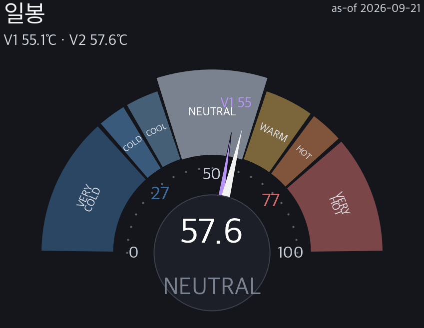
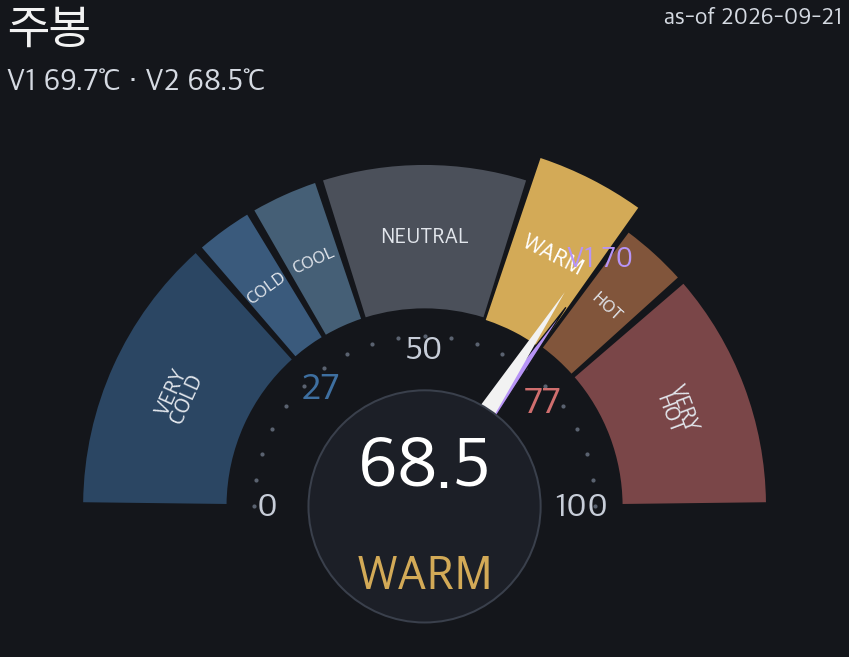
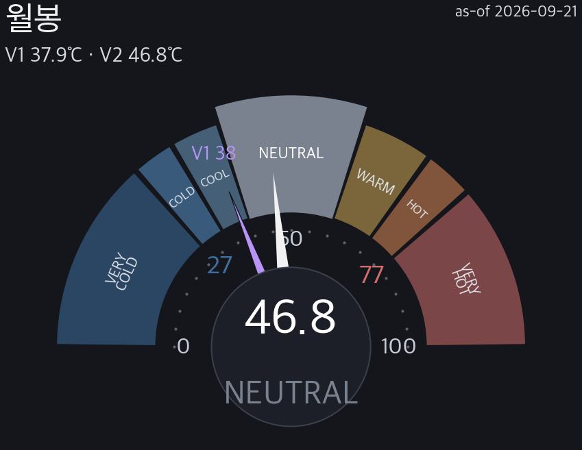
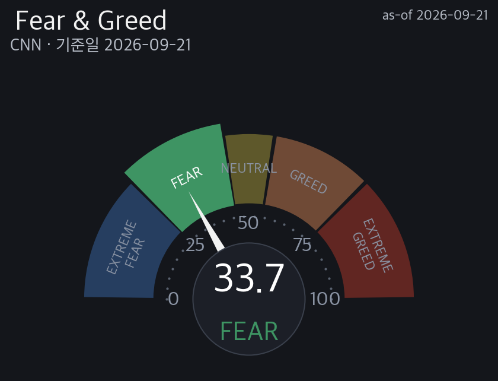
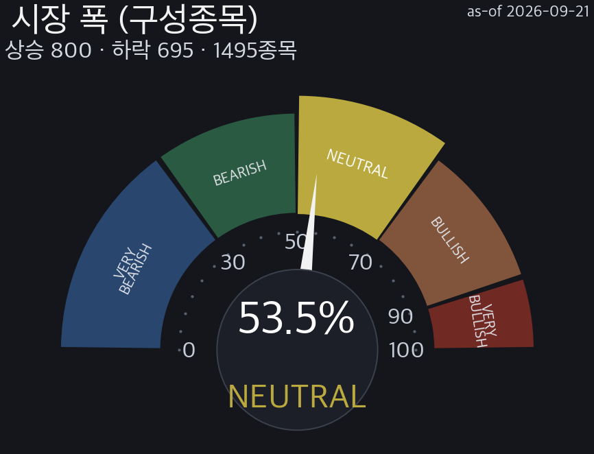

| No | 지수 | 강세% | 등급 |
|---|---|---|---|
| 1 | S&P 500 | 56.46% | NEUTRAL |
| 2 | Nasdaq 100 | 72.28% | BULLISH |
| 3 | Dow 30 | 66.67% | NEUTRAL |
| 4 | S&P MidCap 400 | 49.62% | BEARISH |
| 5 | S&P SmallCap 600 | 53.63% | NEUTRAL |
| 6 | Russell 2000 | 53.35% | NEUTRAL |
| No | 시장 | 확률 | 소스 | 조사시각 |
|---|---|---|---|---|
| 1 | 10월 FOMC 금리결정 | 인상 54% | Kalshi | 실시간 조사 · 조사 2026-09-21 13:16 |
| 2 | 10월 FOMC 금리결정 | 인상 56% / 동결 44% | Polymarket | 실시간 조사 · 조사 2026-09-21 13:16 |
| 3 | 10월 FOMC 금리결정 | 인상 60% / 동결 42% | CME | 실시간 조사 · 조사 2026-09-21 09:48 |
| No | 일자 | 이벤트 | 중요도 | 영향 |
|---|---|---|---|---|
| 1 | 2026-09-30 D-8 | PCE(개인소비·연준선호물가) | 🔴 | 성장·소비(PCE/GDP) · FRED |
| 2 | 2026-09-30 D-8 | GDP(속보/확정치) | 🔴 | 성장·소비(PCE/GDP) · FRED |
| 3 | 2026-10-02 D-10 | 고용(Employment Situation) | 🟡 | 고용 · FRED |
| 4 | 2026-10-07 D-15 | 9월 FOMC 의사록 공개 | 🔴 | 금리·정책 · policy_calendar |
| 5 | 2026-10-14 D-22 | CPI | 🔴 | 인플레 지표 · FRED |
| 6 | 2026-10-15 D-23 | PPI | 🔴 | 인플레 지표 · FRED |
| 7 | 2026-10-28 D-36 | 미 연준 FOMC (10/27-28) | 🔴 | 금리·정책 · policy_calendar |
| 8 | 2026-10-29 D-37 | PCE(개인소비·연준선호물가) | 🔴 | 성장·소비(PCE/GDP) · FRED |
| 9 | 2026-10-29 D-37 | GDP(속보/확정치) | 🔴 | 성장·소비(PCE/GDP) · FRED |
| 10 | 2026-11-03 D-42 | 미국 중간선거 | 🟡 | 정치·선거 · policy_calendar |
| 11 | 2026-11-06 D-45 | 고용(Employment Situation) | 🟡 | 고용 · FRED |
| 12 | 2026-11-10 D-49 | CPI | 🔴 | 인플레 지표 · FRED |
| 13 | 2026-11-13 D-52 | PPI | 🔴 | 인플레 지표 · FRED |
| No | 자산군 | 편향 | ▲/▼ 반전 | 종목수 |
|---|---|---|---|---|
| 1 | 원자재 | BULL(선별) | ▲6 / ▼0 | 19종 |
| 2 | 코인 | BULL | ▲3 / ▼0 | 5종 |
| 3 | 환율 | MIXED | ▲2 / ▼2 | 8종 |
| 4 | 금리 | BULL | ▲11 / ▼1 | 13종 |
| No | 자산군(프록시) | 평균 초과 | 중앙값 초과 | hit | 기저 | edge | 표본(봉/에피소드/neff) | 등급 |
|---|---|---|---|---|---|---|---|---|
| 1 | 원자재 DBC | ▲ +0.52%p | ▲ +0.37%p | 56.7% | 53.7% | ▲ +3.1%p | 1,227봉 / 257ep / neff 52 | + |
| 2 | 금 GC=F | ▲ +0.22%p | ▼ -0.01%p | 55.6% | 55.3% | ▲ +0.3%p | 1,227봉 / 257ep / neff 58 | · |
| 3 | 주식 ^GSPC | ▲ +0.21%p | ▲ +0.19%p | 70.3% | 68.2% | ▲ +2.2%p | 1,227봉 / 257ep / neff 66 | · |
| 4 | 달러 DX-Y.NYB | ▼ -0.01%p | ▲ +0.04%p | 53.8% | 52.7% | ▲ +1.1%p | 1,227봉 / 257ep / neff 55 | · |
| 5 | 현금 ^IRX | ▼ -0.01%p | ▼ -0.01%p | — | — | — | 1,227봉 / 257ep / neff 29 | · |
| 6 | 하이일드 HYG | ▼ -0.10%p | ▼ -0.02%p | 52.9% | 54.0% | ▼ -1.1%p | 1,227봉 / 257ep / neff 75 | · |
| 7 | 중기국채 IEF | ▼ -0.22%p | ▼ -0.14%p | 47.2% | 50.9% | ▼ -3.7%p | 1,227봉 / 257ep / neff 53 | · |
| 8 | 장기국채 TLT | ▼ -0.43%p | ▼ -0.29%p | 44.8% | 48.6% | ▼ -3.7%p | 1,227봉 / 257ep / neff 53 | · |
| No | 자산군 | Quad1 골디락스/디스인플레 · 20.3% · 219ep | Quad2 리플레이션 · 29.4% · 259ep | Quad3 스태그플레이션 · 23.7% · 243ep | Quad4 디플레/리스크오프 · 26.6% · 211ep |
|---|---|---|---|---|---|
| 1 | 주식 | · ▼ -0.29%p | ◀ · ▲ +0.21%p | · ▼ -0.19%p | · ▲ +0.16%p |
| 2 | 장기국채 | · ▼ -0.07%p | ◀ · ▼ -0.43%p | · ▼ -0.24%p | + ▲ +0.74%p |
| 3 | 중기국채 | · ▲ +0.02%p | ◀ · ▼ -0.22%p | · ▼ -0.17%p | · ▲ +0.38%p |
| 4 | 금 | · ▲ +0.01%p | ◀ · ▲ +0.22%p | − ▼ -0.62%p | · ▲ +0.29%p |
| 5 | 원자재 | · ▼ -0.08%p | ◀ + ▲ +0.52%p | · ▲ +0.39%p | − ▼ -0.86%p |
| 6 | 달러 | · ▼ -0.22%p | ◀ · ▼ -0.01%p | · ▲ +0.17%p | · ▲ +0.04%p |
| 7 | 하이일드 | · ▼ -0.17%p | ◀ · ▼ -0.10%p | · ▼ -0.07%p | · ▲ +0.30%p |
| 8 | 현금 | · ― 0.00%p | ◀ · ▼ -0.01%p | · ▲ +0.01%p | · ▲ +0.01%p |
scripts/nix_quad_base_rates.py 2026-09-21 --print --verify| 판정 | 무효화 조건 (관측치·임계·지속) | 현재 ↔ 문턱 거리 | 확인 시점·주기 | 틀리면 — 상정 손실·조치 |
|---|---|---|---|---|
| 성장축 상승(rising) 반전 | 미10Y 20일 변화 −전환·구리/금 20일 변화 −전환 동시 = 축 다수결이 하락(falling) 로 반전 | 미10Y +4.75% → 0 까지 -4.75pp · 구리/금 +10.13% → 0 까지 -10.13pp | 매 일봉 마감 (20봉 방향 자동 재판정) | Quad2 폐기 → Quad3 스태그플레이션 시나리오로 이동 — 프레임 우위 후보 금·원자재·현금(§1dV 실측 대조) |
| 인플레축 상승(rising) 반전 | TIP/IEF 20일 변화 −전환 = 축 다수결이 하락(falling) 로 반전 | TIP/IEF +0.45% → 0 까지 -0.45pp | 매 일봉 마감 (20봉 방향 자동 재판정) | Quad2 폐기 → Quad1 골디락스/디스인플레 시나리오로 이동 — 프레임 우위 후보 주식·성장주·크레딧(§1dV 실측 대조) |
| 구조 무효화 (200일선) | 국가지수 200일선 위 비율 < 50% 또는 SPY 200일선 이탈 | 현재 68.6% → 50% 까지 -18.6pp · SPY 200일선 아래(이탈) | 매 일봉 마감 (§5 구조 필터) | 구조 bear 전환 → 'Quad2 라도 방어 아직 아님' 논거 폐기 · 방어 우선(§5 killswitch 연동) |
| 크로스에셋 정합 붕괴 | 상승반전/하락반전 구성 역전 — 레짐 수혜 자산이 OUT·피해 자산이 IN 으로 뒤집힘 | 현재 상승반전 10종 vs 하락반전 9종 (차 1종) | 매 일봉 마감 (§2c RRG-TF6 반전 재집계) | 크로스에셋 정합 상실 → 레짐 판정 신뢰도 강등(confidence 하향) · 단일 축 판정으로 후퇴 |
| 순위 | 자산군 | 판정 | 판정 근거 |
|---|---|---|---|
| 1 | 크립토 | 🔴 우위 | RRG-TF6(6기간) 코인 그룹 3상승/0하락(n5) |
| 2 | 금·원자재 | 🔴 우위(선별) | RRG-TF6(6기간) 원자재 그룹 6상승/0하락(n19) |
| 3 | 현금·단기 | 🟡 중립 | 단기금리 중립 |
| 4 | 비달러 통화 | 🟡 중립 | RRG-TF6(6기간) 환율 그룹 2상승/2하락(n8) |
| 5 | 국채·듀레이션 | 🟡 중립 | 금리 그룹 tilt bull — 금리↑=채권값↓ (RRG-TF6(6기간) 금리 그룹 11상승/1하락(n13)) |
| 6 | 크레딧(IG/HY) | 🟡 중립 | 크레딧 rotation 안정 |
| 7 | 주식 | 🔵 약세 | RRG-TF6(6기간) 각국지수 그룹 6상승/11하락(n35) |
| No | 티커 | 종목 | YTD | 5일 | 2주(12) | 1달(22) | 분기(54) | 반년(120) | 1y(245) | RRG-TF6 | 54wH |
|---|---|---|---|---|---|---|---|---|---|---|---|
| 원자재 | |||||||||||
| 1 | DBC | 원자재지수 | ▲ +45.5% | ▼ -1.7% | ▲ +2.0% | ▲ +5.9% | ▲ +20.7% | ▲ +11.3% | ▲ +44.0% | △ 상승지속 | -3.6% |
| 2 | DBA | 농산물 | ▲ +12.2% | ▼ -1.0% | ▼ -2.0% | ▲ +1.4% | ▲ +4.1% | ▲ +5.8% | ▲ +6.6% | △ 상승지속 | -2.8% |
| 3 | GC=F | 금 | ▲ +1.2% | ▲ +0.6% | ▼ -0.8% | ▼ -3.6% | ▲ +5.1% | ▼ -3.2% | ▲ +13.6% | · 중립 | -21.6% |
| 4 | SI=F | 은 | ▼ -5.8% | ▲ +4.7% | ▲ +2.7% | ▲ +1.1% | ▲ +7.4% | ▼ -5.5% | ▲ +42.6% | · 중립 | -45.2% |
| 5 | PL=F | 백금 | ▼ -13.1% | ▼ -2.1% | ▲ +4.9% | ▲ +16.2% | ▲ +11.1% | ▼ -14.8% | ▲ +33.8% | ◌ 부족 | -35.2% |
| 6 | PA=F | 팔라듐 | ▼ -14.3% | ▲ +5.9% | ▲ +4.3% | ▲ +14.7% | ▲ +15.7% | ▼ -14.1% | ▲ +25.4% | ◌ 부족 | -34.2% |
| 7 | HG=F | 구리 | ▲ +20.2% | ▲ +7.1% | ▲ +4.3% | ▲ +4.5% | ▲ +9.7% | ▲ +23.8% | ▲ +40.0% | △ 상승지속 | -0.9% |
| 8 | ALI=F | 알루미늄 | ▲ +15.0% | ▼ -3.0% | ▼ -1.3% | ▼ -2.2% | ▼ -11.0% | ▲ +2.6% | ▲ +34.5% | ◌ 부족 | -19.5% |
| 9 | CL=F | WTI | ▲ +60.5% | ▼ -9.3% | ▲ +1.1% | ▲ +7.2% | ▲ +34.2% | ▼ -10.6% | ▲ +45.0% | △ 상승지속 | -23.0% |
| 10 | BZ=F | 브렌트 | ▲ +58.1% | ▼ -9.1% | ▲ +0.5% | ▲ +4.9% | ▲ +33.5% | ▼ -14.8% | ▲ +41.3% | △ 상승지속 | -23.8% |
| 11 | NG=F | 천연가스 | ▼ -21.6% | ▼ -2.1% | ▼ -4.1% | ▲ +0.8% | ▼ -12.6% | ▼ -1.8% | ▼ -13.2% | △ 상승지속 | -63.8% |
| 12 | RB=F | 가솔린 | ▲ +105.5% | ▲ +4.2% | ▲ +10.7% | ▲ +2.7% | ▲ +12.5% | ▲ +24.3% | ▲ +78.2% | ◌ 부족 | -8.7% |
| 13 | HO=F | 난방유 | ▲ +106.0% | ▼ -3.1% | ▲ +1.2% | ▼ -0.3% | ▲ +24.0% | ▲ +21.5% | ▲ +88.5% | ◌ 부족 | -9.9% |
| 14 | TTF=F | TTF유럽가스 | ▲ +130.9% | ▲ +1.7% | ▲ +9.8% | ▲ +10.9% | ▲ +34.8% | ▲ +18.6% | ▲ +102.6% | ◌ 부족 | -3.4% |
| 15 | ZW=F | 밀 | ▲ +51.4% | ▲ +12.6% | ▲ +17.5% | ▲ +16.1% | ▲ +30.7% | ▲ +28.3% | ▲ +51.7% | ◌ 부족 | -0.8% |
| 16 | ZS=F | 대두 | ▲ +24.0% | ▲ +4.2% | ▲ +9.6% | ▲ +8.3% | ▲ +14.5% | ▲ +8.1% | ▲ +25.9% | ◌ 부족 | -0.2% |
| 17 | ZC=F | 옥수수 | ▲ +17.0% | ▲ +5.8% | ▲ +12.0% | ▲ +14.0% | ▲ +24.4% | ▲ +17.0% | ▲ +27.1% | ◌ 부족 | -1.1% |
| 18 | KRBN | KraneShares 글로벌 탄소배출권 ETF | ▼ -3.7% | ▼ -0.4% | ▲ +0.5% | ▲ +2.8% | ▲ +5.2% | ▲ +18.5% | ▲ +7.5% | ◌ 부족 | -5.7% |
| 19 | DJP | iPath Bloomberg Commodity | ▲ +34.5% | ▲ +0.7% | ▲ +4.5% | ▲ +8.8% | ▲ +8.6% | ▲ +9.2% | ▲ +47.3% | ◌ 부족 | -2.0% |
| 코인 | |||||||||||
| 20 | BTC-USD | 비트코인 | ▼ -1.9% | ▲ +14.3% | ▲ +11.2% | ▲ +12.1% | ▲ +36.2% | ▲ +13.1% | ▼ -6.0% | ▲ 상승전환 | -6.2% |
| 21 | ETH-USD | 이더리움 | ▼ -6.8% | ▲ +15.8% | ▲ +13.4% | ▲ +15.7% | ▲ +46.5% | ▲ +33.3% | ▼ -12.2% | ▲ 상승전환 | -12.5% |
| 22 | XRP-USD | 리플 | ▼ -19.3% | ▲ +16.7% | ▲ +8.7% | ▲ +11.5% | ▲ +41.3% | ▲ +12.3% | ▼ -23.7% | ▲ 상승전환 | -23.7% |
| 23 | USDT-USD | 테더 | ▲ +0.1% | ▲ +0.0% | ▲ +0.1% | ▲ +0.1% | ▲ +0.1% | ▲ +0.1% | ▲ +0.1% | ◌ 부족 | -0.3% |
| 24 | SOL-USD | 솔라나 | ▼ -13.8% | ▲ +16.3% | ▲ +45.1% | ▲ +47.7% | ▲ +33.8% | ▲ +31.5% | ▼ -8.9% | ◌ 부족 | -26.3% |
| 환율 | |||||||||||
| 25 | DX-Y.NYB | DXY | ▲ +2.0% | ▲ +1.0% | ▲ +0.9% | ▲ +1.6% | ▼ -0.4% | ▼ -0.1% | ▲ +2.6% | △ 상승지속 | -1.3% |
| 26 | KRW=X | USD/KRW | ▼ -4.8% | ▲ +2.2% | ▲ +1.2% | ▼ -1.0% | ▼ -10.1% | ▼ -8.9% | ▼ -3.3% | ▼ 하락전환 | -13.4% |
| 27 | JPY=X | USD/JPY | ▲ +0.4% | ▲ +2.6% | ▼ -1.0% | ▼ -0.6% | ▼ -2.9% | ▼ -1.5% | ▲ +3.1% | ▼ 하락전환 | -4.0% |
| 28 | EURUSD=X | EUR/USD | ▼ -2.4% | ▼ -1.1% | ▼ -1.0% | ▼ -1.8% | ▲ +0.2% | ▼ -0.4% | ▼ -1.4% | △ 상승지속 | -4.6% |
| 29 | GBPUSD=X | GBP/USD | ▲ +0.9% | ▼ -0.3% | ▲ +0.7% | ▲ +2.3% | ▲ +1.1% | ▲ +1.8% | ▼ -0.4% | ◌ 부족 | -1.8% |
| 30 | CNY=X | USD/CNY | ▼ -3.9% | ▲ +0.0% | ▼ -0.3% | ▼ -0.7% | ▼ -0.6% | ▼ -2.1% | ▼ -5.5% | ◌ 부족 | -6.5% |
| 31 | AUDUSD=X | AUD/USD | ▲ +7.7% | ▲ +1.1% | ▲ +1.9% | ▲ +3.2% | ▲ +1.7% | ▲ +1.7% | ▲ +7.6% | ◌ 부족 | -1.1% |
| 32 | USDTWD=X | USD/TWD | ▲ +1.0% | ▼ -0.7% | ▼ -1.8% | ▼ -2.3% | ▲ +0.1% | ▼ -0.8% | ▲ +5.3% | ◌ 부족 | -3.5% |
| 금리 | |||||||||||
| 33 | EMB | EM채권 | ▼ -2.6% | ▲ +0.6% | ▼ -0.4% | ▼ -1.4% | ▼ -2.7% | ▲ +0.7% | ▼ -1.7% | △ 상승지속 | -4.1% |
| 34 | TIP | 물가연동 | ▼ -3.8% | ▼ -0.1% | ▼ -1.1% | ▼ -1.7% | ▼ -2.6% | ▼ -4.2% | ▼ -5.0% | · 중립 | -5.8% |
| 35 | ^TNX | 10Y금리 | ▲ +18.5% | ▲ +0.0% | ▲ +3.5% | ▲ +6.7% | ▲ +10.8% | ▲ +14.3% | ▲ +19.9% | △ 상승지속 | -1.1% |
| 36 | ^TYX | 30Y금리 | ▲ +8.9% | ▼ -0.6% | ▲ +0.6% | ▲ +2.0% | ▲ +6.1% | ▲ +8.0% | ▲ +12.6% | △ 상승지속 | -2.4% |
| 37 | ^FVX | 5Y금리 | ▲ +29.3% | ▲ +0.9% | ▲ +6.2% | ▲ +11.1% | ▲ +14.8% | ▲ +21.5% | ▲ +29.2% | △ 상승지속 | -2.1% |
| 38 | ^IRX | 3M금리 | ▲ +12.7% | ▲ +1.2% | ▲ +5.6% | ▲ +7.6% | ▲ +7.9% | ▲ +10.7% | ▲ +3.1% | ▲ 상승전환 | -0.1% |
| 39 | 2YY=F | 2Y금리 | ▲ +30.7% | ▲ +0.8% | ▲ +5.4% | ▲ +5.9% | ▲ +13.3% | ▲ +16.3% | ▲ +22.1% | △ 상승지속 | +0.0% |
| 40 | HYG | HY하이일드 | ▼ -2.5% | ▲ +0.2% | ▼ -0.5% | ▼ -1.3% | ▼ -1.5% | ▼ -0.2% | ▼ -3.1% | △ 상승지속 | -3.3% |
| 41 | JNK | 정크본드 | ▼ -2.6% | ▲ +0.2% | ▼ -0.5% | ▼ -1.3% | ▼ -1.5% | ▼ -0.1% | ▼ -3.4% | △ 상승지속 | -3.4% |
| 42 | LQD | 투자등급 | ▼ -4.6% | ▲ +0.8% | ▼ -0.2% | ▼ -1.4% | ▼ -3.3% | ▼ -3.0% | ▼ -5.8% | ▲ 상승전환 | -6.9% |
| 43 | BKLN | 뱅크론 | ▼ -2.1% | ▼ -0.2% | ▲ +0.0% | ▼ -0.1% | ▲ +0.8% | ▲ +1.2% | ▼ -1.7% | △ 상승지속 | -2.4% |
| 44 | TLT | 장기국채 | ▼ -6.0% | ▲ +1.1% | ▼ -0.2% | ▼ -1.5% | ▼ -4.3% | ▼ -5.7% | ▼ -8.7% | ▲ 상승전환 | -11.3% |
| 45 | IEF | 7-10Y Treasury | ▼ -5.1% | ▲ +0.2% | ▼ -1.1% | ▼ -2.4% | ▼ -3.2% | ▼ -4.3% | ▼ -5.5% | ▼ 하락전환 | -7.0% |
| 국가지수 | |||||||||||
| 46 | ^KS11 | KOSPI | ▲ +60.0% | ▼ -0.2% | ▲ +5.0% | ▲ +6.5% | ▼ -9.9% | ▲ +26.3% | ▲ +99.8% | · 중립 | -26.5% |
| 47 | ^KS200 | KOSPI200 | ▲ +73.1% | ▼ -7.6% | ▼ -21.2% | ▼ -22.4% | ▲ +8.5% | ▲ +51.3% | ▲ +148.5% | ◌ 부족 | -28.8% |
| 48 | ^KQ11 | KOSDAQ종합 | ▼ -12.5% | ▲ +0.8% | ▲ +2.9% | ▲ +0.3% | ▼ -4.6% | ▼ -27.2% | ▼ -2.9% | ▲ 상승전환 | -32.7% |
| 49 | 229200.KS | KOSDAQ150 | ▼ -8.5% | ▲ +4.8% | ▼ -2.1% | ▲ +22.2% | ▼ -17.9% | ▼ -26.1% | ▲ +7.5% | ◌ 부족 | -33.4% |
| 50 | ^GDAXI | DAX | ▲ +4.2% | ▲ +0.5% | ▼ -1.6% | ▼ -1.6% | ▲ +0.4% | ▲ +9.8% | ▲ +6.1% | ▽ 하락지속 | -3.9% |
| 51 | ^FTSE | FTSE100 | ▲ +7.9% | ▲ +0.4% | ▼ -0.8% | ▼ -0.0% | ▲ +0.8% | ▲ +6.0% | ▲ +13.7% | △ 상승지속 | -2.3% |
| 52 | ^FCHI | CAC | ▼ -0.7% | ▲ +0.3% | ▼ -1.8% | ▼ -3.7% | ▼ -3.5% | ▲ +2.0% | ▲ +0.7% | ▼ 하락전환 | -7.0% |
| 53 | ^STOXX50E | EuroStoxx50 | ▲ +6.7% | ▲ +0.9% | ▼ -1.0% | ▼ -1.6% | ▼ -0.0% | ▲ +14.0% | ▲ +14.9% | ▼ 하락전환 | -3.9% |
| 54 | ^AEX | AEX | ▲ +14.0% | ▲ +0.1% | ▼ -1.2% | ▲ +1.0% | ▲ +2.0% | ▲ +12.2% | ▲ +22.4% | ◌ 부족 | -1.8% |
| 55 | ^IBEX | IBEX | ▲ +13.7% | ▲ +0.4% | ▼ -1.6% | ▲ +0.8% | ▲ +6.0% | ▲ +17.4% | ▲ +30.6% | ◌ 부족 | -2.3% |
| 56 | FTSEMIB.MI | FTSE MIB | ▲ +15.2% | ▼ -0.8% | ▼ -2.7% | ▲ +1.1% | ▲ +1.5% | ▲ +18.7% | ▲ +25.3% | ◌ 부족 | -3.3% |
| 57 | ^SSMI | SMI | ▲ +8.6% | ▲ +0.1% | ▼ -1.3% | ▼ -1.3% | ▲ +4.9% | ▲ +8.2% | ▲ +17.9% | ◌ 부족 | -1.9% |
| 58 | PSI | 포르투갈PSI | ▲ +74.8% | ▲ +12.6% | ▲ +12.1% | ▲ +3.9% | ▼ -9.2% | ▲ +63.7% | ▲ +109.2% | ▼ 하락전환 | -23.4% |
| 59 | ^BFX | 벨기에BEL20 | ▲ +14.2% | ▲ +1.6% | ▲ +2.1% | ▲ +1.6% | ▲ +1.8% | ▲ +13.3% | ▲ +22.0% | ◌ 부족 | -0.7% |
| 60 | ^ATX | 오스트리아ATX | ▲ +24.8% | ▲ +1.7% | ▲ +0.1% | ▲ +5.4% | ▲ +6.7% | ▲ +25.8% | ▲ +43.7% | ◌ 부족 | -1.5% |
| 61 | ^OMX | OMX스톡홀름 | ▲ +15.3% | ▲ +1.9% | ▲ +0.7% | ▲ +3.0% | ▲ +8.4% | ▲ +7.9% | ▲ +27.9% | ◌ 부족 | -0.8% |
| 62 | ^OMXC25 | OMX코펜하겐 | ▲ +5.0% | ▲ +1.4% | ▲ +4.3% | ▲ +3.7% | ▲ +9.7% | ▲ +10.8% | ▲ +13.2% | ◌ 부족 | -1.4% |
| 63 | ^N225 | 니케이 | ▲ +25.4% | ▲ +1.6% | ▲ +1.1% | ▼ -0.5% | ▼ -5.4% | ▲ +21.3% | ▲ +45.2% | ▼ 하락전환 | -10.7% |
| 64 | ^AXJO | ASX | ▲ +3.6% | ▼ -0.5% | ▼ -2.3% | ▲ +1.0% | ▲ +2.7% | ▲ +5.1% | ▲ +2.7% | ◌ 부족 | -2.8% |
| 65 | ^NZ50 | 뉴질랜드 | ▲ +1.5% | ▼ -1.5% | ▲ +0.2% | ▼ -1.5% | ▲ +2.8% | ▲ +1.8% | ▲ +4.8% | ◌ 부족 | -2.1% |
| 66 | ^GSPTSE | TSX | ▲ +15.5% | ▲ +1.3% | ▲ +1.0% | ▲ +3.6% | ▲ +7.9% | ▲ +11.3% | ▲ +26.8% | ◌ 부족 | -0.6% |
| 67 | URTH | MSCI World | ▲ +12.4% | ▲ +1.4% | ▲ +0.8% | ▲ +0.2% | ▲ +2.6% | ▲ +19.9% | ▲ +15.9% | ▼ 하락전환 | -1.1% |
| 68 | ^FTMC | FTSE 250 | ▲ +9.3% | ▲ +2.8% | ▼ -0.0% | ▼ -0.6% | ▲ +4.2% | ▲ +16.9% | ▲ +11.1% | ▲ 상승전환 | -2.6% |
| 69 | ^BVSP | 브라질 | ▲ +16.2% | ▲ +0.6% | ▲ +0.8% | ▲ +11.2% | ▲ +8.2% | ▲ +2.2% | ▲ +28.4% | · 중립 | -6.4% |
| 70 | ^MXX | 멕시코 | ▼ -0.9% | ▼ -0.6% | ▼ -2.1% | ▼ -0.7% | ▼ -5.8% | ▼ -7.4% | ▲ +1.5% | ▽ 하락지속 | -11.9% |
| 71 | 000001.SS | 상하이 | ▼ -2.8% | ▲ +0.6% | ▼ -0.8% | ▲ +0.5% | ▼ -3.2% | ▼ -0.1% | ▲ +1.3% | ▲ 상승전환 | -8.1% |
| 72 | ^HSI | 항셍 | ▼ -6.0% | ▼ -0.2% | ▼ -2.2% | ▼ -2.9% | ▲ +4.8% | ▼ -2.3% | ▼ -6.8% | ▼ 하락전환 | -11.8% |
| 73 | ^TWII | 대만 | ▲ +60.8% | ▲ +2.2% | ▲ +2.2% | ▲ +5.5% | ▲ +0.9% | ▲ +42.5% | ▲ +86.1% | ▲ 상승전환 | -2.2% |
| 74 | ^NSEI | 인도Nifty | ▼ -10.7% | ▼ -0.6% | ▼ -3.0% | ▼ -3.4% | ▼ -3.8% | ▲ +1.9% | ▼ -7.8% | ▽ 하락지속 | -11.5% |
| 75 | ^BSESN | 인도Sensex | ▼ -12.8% | ▼ -0.8% | ▼ -3.4% | ▼ -3.8% | ▼ -4.5% | ▲ +0.3% | ▼ -10.1% | ▽ 하락지속 | -13.8% |
| 76 | ^HSCE | HSCEI (H지수) | ▼ -10.3% | ▼ -0.2% | ▼ -2.7% | ▼ -2.9% | ▲ +5.3% | ▼ -4.2% | ▼ -13.0% | △ 상승지속 | -15.8% |
| 77 | 000300.SS | CSI 300 | ▼ -5.0% | ▼ -4.6% | ▼ -6.9% | ▼ -9.2% | ▼ -6.9% | ▼ -5.3% | ▲ +11.5% | ◌ 부족 | -11.5% |
| 78 | 399001.SZ | Shenzhen Component | ▼ -1.4% | ▲ +1.3% | ▲ +0.2% | ▼ -1.8% | ▼ -11.5% | ▼ -0.9% | ▲ +4.9% | ▽ 하락지속 | -16.7% |
| 79 | EWY | Korea ETF | ▲ +85.0% | ▲ +7.3% | ▲ +5.8% | ▲ +8.4% | ▼ -0.4% | ▲ +62.5% | ▲ +135.7% | · 중립 | -14.4% |
| 80 | EEM | EM ETF | ▲ +22.4% | ▲ +4.3% | ▲ +2.5% | ▲ +4.1% | ▲ +1.9% | ▲ +25.7% | ▲ +29.4% | · 중립 | -3.8% |
| No | 반전 유형 | 검출 | 진짜반전(mom_dir 확인) | 대표 자산 |
|---|---|---|---|---|
| 1 | ▲ 상승전환 (매수 후보) | 10개 | 5개 진짜반등 | 비트코인 · 이더리움 · 리플 · 3M금리 · 투자등급 · 장기국채 |
| 2 | ▼ 하락전환 (매도 후보) | 9개 | 6개 진짜하락 | USD/KRW · USD/JPY · 7-10Y Treasury · CAC · EuroStoxx50 · 포르투갈PSI |
| No | 주식 | 장기국채 | 금 | 원자재 | 달러 | 하이일드 | 비트코인 | |
|---|---|---|---|---|---|---|---|---|
| 1 | 주식 | · | +0.25 Δ+0.11 | +0.29 Δ+0.16 | 역 -0.19 Δ-0.26 | 역 -0.28 Δ-0.21 | +0.68 Δ-0.04 | +0.49 Δ+0.13 |
| 2 | 장기국채 | +0.25 Δ+0.11 | · | +0.04 Δ-0.03 | 역 -0.42 Δ-0.24 | 역 -0.25 Δ+0.06 | +0.53 Δ+0.04 | +0.04 Δ+0.07 |
| 3 | 금 | +0.29 Δ+0.16 | +0.04 Δ-0.03 | · | +0.21 Δ-0.04 | 역 -0.36 Δ-0.00 | +0.18 Δ+0.07 | +0.23 Δ+0.12 |
| 4 | 원자재 | 역 -0.19 Δ-0.26 | 역 -0.42 Δ-0.24 | +0.21 Δ-0.04 | · | +0.06 Δ+0.06 | 역 -0.27 Δ-0.31 | +0.06 Δ+0.01 |
| 5 | 달러 | 역 -0.28 Δ-0.21 | 역 -0.25 Δ+0.06 | 역 -0.36 Δ-0.00 | +0.06 Δ+0.06 | · | 역 -0.40 Δ-0.13 | 역 -0.16 Δ-0.10 |
| 6 | 하이일드 | +0.68 Δ-0.04 | +0.53 Δ+0.04 | +0.18 Δ+0.07 | 역 -0.27 Δ-0.31 | 역 -0.40 Δ-0.13 | · | +0.32 Δ+0.06 |
| 7 | 비트코인 | +0.49 Δ+0.13 | +0.04 Δ+0.07 | +0.23 Δ+0.12 | +0.06 Δ+0.01 | 역 -0.16 Δ-0.10 | +0.32 Δ+0.06 | · |
scripts/nix_cross_correlation.py 2026-09-21 --print| No | 자산 | 추세 상태 | 모멘텀(RS-Mom) | TF↑ | 5 | 12 | 22 | 54 | 120 | 245 |
|---|---|---|---|---|---|---|---|---|---|---|
| 1 | 원자재지수 | △ 상승지속 | 약 ▽ | 6/6 | I | I | I | I | I | I |
| 2 | 농산물 | △ 상승지속 | 약 ▽ | 5/6 | G | I | I | I | I | I |
| 3 | 금 | · 중립 | 약 ▽ | 2/6 | G | G | I | G | G | I |
| 4 | 은 | · 중립 | 약 ▽ | 2/6 | G | G | I | G | G | I |
| 5 | 백금 | ◌ 부족 | - ▽ | 0/6 | U | U | U | U | U | U |
| 6 | 팔라듐 | ◌ 부족 | - ▽ | 0/6 | U | U | U | U | U | U |
| 7 | 구리 | △ 상승지속 | 약 ▽ | 6/6 | I | I | I | I | I | I |
| 8 | 알루미늄 | ◌ 부족 | - ▽ | 0/6 | U | U | U | U | U | U |
| 9 | WTI | △ 상승지속 | 약 ▽ | 5/6 | I | I | I | G | I | I |
| 10 | 브렌트 | △ 상승지속 | 약 ▽ | 6/6 | I | I | I | I | I | I |
| 11 | 천연가스 | △ 상승지속 | 강 ▽ | 6/6 | I | I | I | I | I | I |
| 12 | 가솔린 | ◌ 부족 | - ▽ | 0/6 | U | U | U | U | U | U |
| 13 | 난방유 | ◌ 부족 | - ▽ | 0/6 | U | U | U | U | U | U |
| 14 | TTF유럽가스 | ◌ 부족 | - ▽ | 0/6 | U | U | U | U | U | U |
| 15 | 밀 | ◌ 부족 | - ▽ | 0/6 | U | U | U | U | U | U |
| 16 | 대두 | ◌ 부족 | - ▽ | 0/6 | U | U | U | U | U | U |
| 17 | 옥수수 | ◌ 부족 | - ▽ | 0/6 | U | U | U | U | U | U |
| 18 | KraneShares 글로벌 탄소배출권 ETF | ◌ 부족 | - ▽ | 0/6 | U | U | U | U | U | U |
| 19 | iPath Bloomberg Commodity | ◌ 부족 | - ▽ | 0/6 | U | U | U | U | U | U |
| 20 | 비트코인 | ▲ 상승전환 | 강 ▽ | 3/6 | L | L | L | W | W | W |
| 21 | 이더리움 | ▲ 상승전환 | 약 ▽ | 4/6 | I | I | I | I | G | G |
| 22 | 리플 | ▲ 상승전환 | 약 ▽ | 2/6 | W | L | L | G | G | W |
| 23 | 테더 | ◌ 부족 | - ▽ | 0/6 | U | U | U | U | U | U |
| 24 | 솔라나 | ◌ 부족 | - ▽ | 0/6 | U | U | U | U | U | U |
| 25 | DXY | △ 상승지속 | 강 ▽ | 5/6 | I | I | G | I | I | I |
| 26 | USD/KRW | ▼ 하락전환 | 강 ▽ | 3/6 | I | G | G | G | I | I |
| 27 | USD/JPY | ▼ 하락전환 | 강 ▽ | 4/6 | I | G | G | I | I | I |
| 28 | EUR/USD | △ 상승지속 | 약 ▽ | 5/6 | G | I | I | I | I | I |
| 29 | GBP/USD | ◌ 부족 | - ▽ | 0/6 | U | U | U | U | U | U |
| 30 | USD/CNY | ◌ 부족 | - ▽ | 0/6 | U | U | U | U | U | U |
| 31 | AUD/USD | ◌ 부족 | - ▽ | 0/6 | U | U | U | U | U | U |
| 32 | USD/TWD | ◌ 부족 | - ▽ | 0/6 | U | U | U | U | U | U |
| 33 | EM채권 | △ 상승지속 | 약 ▽ | 6/6 | I | I | I | I | I | I |
| 34 | 물가연동 | · 중립 | 약 ▽ | 4/6 | G | I | I | G | I | I |
| 35 | 10Y금리 | △ 상승지속 | 강 ▽ | 6/6 | I | I | I | I | I | I |
| 36 | 30Y금리 | △ 상승지속 | 약 ▽ | 6/6 | I | I | I | I | I | I |
| 37 | 5Y금리 | △ 상승지속 | 강 ▽ | 5/6 | I | I | I | I | I | G |
| 38 | 3M금리 | ▲ 상승전환 | 강 ▽ | 4/6 | L | L | L | L | W | W |
| 39 | 2Y금리 | △ 상승지속 | 강 ▽ | 5/6 | I | I | I | I | I | G |
| 40 | HY하이일드 | △ 상승지속 | 약 ▽ | 6/6 | I | I | I | I | I | I |
| 41 | 정크본드 | △ 상승지속 | 약 ▽ | 6/6 | I | I | I | I | I | I |
| 42 | 투자등급 | ▲ 상승전환 | 강 ▽ | 4/6 | I | I | I | G | G | I |
| 43 | 뱅크론 | △ 상승지속 | 강 ▽ | 6/6 | I | I | I | I | I | I |
| 44 | 장기국채 | ▲ 상승전환 | 강 ▽ | 4/6 | I | I | I | G | G | I |
| 45 | 7-10Y Treasury | ▼ 하락전환 | 약 ▽ | 3/6 | G | G | I | I | G | I |
| No | 종목 | 6TF 사분면 (5·12·22·54·120·245) | 흐름 | 컴포짓/회전 | 실제 Perf (트레일링·전환후) | 에지 점등(개수·신호값·이름) |
|---|---|---|---|---|---|---|
| 1 | 10Y금리 ^TNX | 리리리리개개 리딩 4/6 · 강 4/6 | ▲ 좋아짐 4/6 | 🔄 개선→리딩 D-6 RS 106.4 · Mom 118.9 | 22d +6.7% · 54d +10.8% · 120d +14.3% · 245d +19.9% ↳ 전환후 6d 실현 -0.2% (초과 -1.4%p) | 에지 27 · 🔵 점등 2 Wt 18 · SA02 15 · SU31 14 · SU51 16 SigRk.P ·m·+32%p RankAll ·m·+25%p |
| 2 | 5Y금리 ^FVX | 리리리리리개 리딩 5/6 · 강 5/6 | ▲ 좋아짐 5/6 | 리딩 (약화→리딩·D-20) RS 115.3 · Mom 121.2 | 22d +11.0% · 54d +14.8% · 120d +21.5% · 245d +29.2% ↳ 전환후 20d 실현 +9.3% (초과 +8.3%p) | 에지 48 · 🔵 점등 8 Wt 18 · SA02 17 · SU31 18 · SU51 17 SigRk.P ·m·+42%p Wt.P ·m·+38%p RankAll ·m·+38%p |
| 3 | WTI CL=F | 리리리약리리 리딩 5/6 · 강 6/6 | ▲ 좋아짐 4/6 | 리딩 (개선→리딩·D-132) RS 108.8 · Mom 107.3 | 22d +7.2% · 54d +34.2% · 120d -10.6% · 245d +44.9% ↳ 전환후 132d 실현 -3.9% (초과 -20.0%p) | 에지 40 · 🔵 점등 1 Wt 28 · SA 35 · SA02 6 · S122 35 · S051 9 · SU31 71 · SU51 63 SU31.P ·d·+18%p |
| 4 | 원자재지수 | 약리리약리리 리딩 4/6 · 강 6/6 | ▲ 좋아짐 4/6 | 리딩 (개선→리딩·D-134) RS 115.7 · Mom 106.9 | 22d +5.9% · 54d +20.7% · 120d +11.3% · 245d +44.0% ↳ 전환후 134d 실현 +18.0% (초과 +3.8%p) | 에지 51 · 🔵 점등 6 Wt 51 · SA 51 · SA02 41 · S122 63 · S051 32 · SU31 72 · SU51 74 SigNm.P ·m·+31%p NormAll ·m·+26%p Rsi22 ·w·+25%p |
| 5 | 2Y금리 2YY=F | 리리리리개개 리딩 4/6 · 강 4/6 | ▲ 좋아짐 5/6 | 리딩 (개선→리딩·D-32) RS 108.8 · Mom 115.5 | 22d +5.9% · 54d +13.3% · 120d +16.3% · 245d +22.1% ↳ 전환후 32d 실현 +6.4% (초과 +7.6%p) | 에지 12 · 🔵 점등 2 Wt 22 · SA02 32 · SU31 34 · SU51 31 PvN2 ·w·+29%p PvN2 ·d·+19%p |
| 6 | 브렌트 BZ=F | 약리리약리리 리딩 4/6 · 강 6/6 | ▲ 좋아짐 4/6 | 리딩 (개선→리딩·D-133) RS 108.6 · Mom 106.3 | 22d +4.9% · 54d +33.4% · 120d -14.8% · 245d +41.3% ↳ 전환후 133d 실현 +4.4% (초과 -10.0%p) | 에지 50 · 🔵 점등 1 Wt 53 · SA 36 · SA02 67 · S122 35 · S051 69 · SU31 48 · SU51 45 S051.P ·w·+27%p |
| 7 | Korea ETF | 약리리약약약 리딩 2/6 · 강 6/6 | ▼ 나빠짐 3/6 | 약화 (리딩→약화·D-137) RS 112.3 · Mom 93.0 | 22d +8.4% · 54d -0.4% · 120d +62.5% · 245d +135.7% ↳ 전환후 137d 실현 +50.4% (초과 +36.9%p) | 에지 66 · 🔵 점등 0 Wt 57 · SA 65 · SA02 56 · S122 47 · S051 64 · SU31 57 · SU51 57 |
| 8 | EM ETF | 약리리약약약 리딩 2/6 · 강 6/6 | ▼ 나빠짐 2/6 | 약화 (리딩→약화·D-137) RS 108.6 · Mom 93.1 | 22d +4.1% · 54d +1.9% · 120d +25.7% · 245d +29.4% ↳ 전환후 137d 실현 +19.4% (초과 +5.9%p) | 에지 84 · 🔵 점등 0 Wt 41 · SA 43 · SA02 49 · S122 24 · S051 34 · SU31 21 · SU51 18 |
| 9 | 30Y금리 ^TYX | 리리개개개지 리딩 2/6 · 강 2/6 | ▲ 좋아짐 4/6 | 개선 (지연→개선·D-12) RS 94.0 · Mom 108.6 | 22d +2.0% · 54d +6.1% · 120d +8.0% · 245d +12.6% ↳ 전환후 12d 실현 +0.6% (초과 -0.5%p) | 에지 22 · 🔵 점등 1 Wt 72 · SA02 82 · SU31 84 · SU51 80 PvN2 ·m·+6%p |
| 10 | 대만 ^TWII | 약약약약약리 리딩 1/6 · 강 6/6 | ▼ 나빠짐 1/6 | 약화 (리딩→약화·D-57) RS 116.0 · Mom 96.7 | 22d +4.1% · 54d +0.3% · 120d +44.7% · 245d +92.2% ↳ 전환후 57d 실현 +5.9% (초과 +1.4%p) | 에지 57 · 🔵 점등 1 Wt 43 · SA 68 · SA02 16 · S122 28 · S051 17 · SU31 69 · SU51 74 SigRk.P ·m·+23%p |
| 11 | 니케이 ^N225 | 약약약약약리 리딩 1/6 · 강 6/6 | ▼ 나빠짐 1/6 | 약화 (리딩→약화·D-57) RS 111.2 · Mom 95.0 | 22d -3.6% · 54d -7.2% · 120d +17.7% · 245d +55.0% ↳ 전환후 57d 실현 -10.2% (초과 -13.9%p) | 에지 86 · 🔵 점등 4 Wt 75 · SA 78 · SA02 75 · S122 76 · S051 70 · SU31 67 · SU51 64 SA02.P ·d·+24%p SigRk.P ·w·+23%p Wt.P ·m·+19%p |
| 12 | 구리 HG=F | 약약약약약리 리딩 1/6 · 강 6/6 | ▼ 나빠짐 4/6 | 약화 (리딩→약화·D-14) RS 110.6 · Mom 96.1 | 22d +4.5% · 54d +9.7% · 120d +23.8% · 245d +40.1% ↳ 전환후 14d 실현 +2.8% (초과 +2.0%p) | 에지 62 · 🔵 점등 3 Wt 16 · SA 15 · SA02 23 · S122 14 · S051 46 · SU31 81 · SU51 82 RankAll ·m·+38%p Zc(22)z ·m·+19%p NormAll ·m·+19%p |
| 13 | 포르투갈PSI | 약약약약약리 리딩 1/6 · 강 6/6 | ▼ 나빠짐 1/6 | 약화 (리딩→약화·D-85) RS 110.6 · Mom 92.0 | 22d +3.9% · 54d -9.2% · 120d +63.7% · 245d +109.2% ↳ 전환후 85d 실현 +1.3% (초과 -4.1%p) | 에지 59 · 🔵 점등 0 Wt 51 · SA 64 · SA02 39 · S122 58 · SU31 71 · SU51 65 |
| 14 | KOSPI ^KS11 | 약약리약약약 리딩 1/6 · 강 6/6 | ▼ 나빠짐 1/6 | 약화 (리딩→약화·D-131) RS 109.8 · Mom 92.9 | 22d +0.4% · 54d -18.7% · 120d +19.3% · 245d +114.1% ↳ 전환후 131d 실현 +23.5% (초과 +11.7%p) | 에지 77 · 🔵 점등 0 Wt 61 · SA 73 · SA02 44 · S122 52 · S051 56 · SU31 60 · SU51 56 |
| 15 | 브라질 ^BVSP | 약리개지약약 리딩 1/6 · 강 4/6 | ▲ 좋아짐 3/6 | 약화 (지연→약화·D-8) RS 101.9 · Mom 97.9 | 22d +11.2% · 54d +8.2% · 120d +0.6% · 245d +28.2% ↳ 전환후 8d 실현 +0.5% (초과 -1.0%p) | 에지 86 · 🔵 점등 2 Wt 40 · SA 32 · SA02 49 · S122 22 · S051 52 · SU31 39 · SU51 43 SigRk.P ·d·+10%p S122.P ·d·+8%p |
| 16 | 3M금리 ^IRX | 리개개개개지 리딩 1/6 · 강 1/6 | ▲ 좋아짐 4/6 | 개선 (지연→개선·D-10) RS 91.3 · Mom 112.3 | 22d +7.6% · 54d +7.9% · 120d +10.7% · 245d +3.1% ↳ 전환후 10d 실현 +6.0% (초과 +5.6%p) | 에지 48 · 🔵 점등 15 Wt 9 · SA02 13 · SU31 12 · SU51 14 Wt.P ·m·+51%p SigNm.P ·m·+51%p SigRk.P ·m·+51%p |
| 17 | 은 SI=F | 개지개지약약 리딩 0/6 · 강 2/6 | ▼ 나빠짐 2/6 | 지연 (약화→지연·D-11) RS 98.9 · Mom 94.8 | 22d +1.1% · 54d +7.4% · 120d -5.5% · 245d +42.6% ↳ 전환후 11d 실현 -0.7% (초과 -0.7%p) | 에지 81 · 🔵 점등 0 Wt 30 · SA 28 · SA02 37 · S122 30 · S051 33 · SU31 16 · SU51 22 |
| 18 | 금 GC=F | 지지개지지약 리딩 0/6 · 강 1/6 | ▼ 나빠짐 1/6 | 지연 (약화→지연·D-57) RS 95.0 · Mom 95.4 | 22d -3.6% · 54d +5.1% · 120d -3.2% · 245d +13.6% ↳ 전환후 57d 실현 +8.4% (초과 +4.8%p) | 에지 60 · 🔵 점등 0 Wt 53 · SA 65 · SA02 29 · S122 73 · S051 30 · SU31 59 · SU51 66 |
| 19 | MSCI World | 지지개개지지 리딩 0/6 · 강 0/6 | ▼ 나빠짐 1/6 | 지연 (약화→지연·D-86) RS 92.9 · Mom 94.7 | 22d +0.2% · 54d +2.6% · 120d +19.9% · 245d +15.9% ↳ 전환후 86d 실현 +4.7% (초과 -0.0%p) | 에지 75 · 🔵 점등 2 Wt 41 · SA 60 · SA02 18 · S122 20 · S051 23 · SU31 77 · SU51 84 SU31.P ·d·+17%p Rsi5 ·m·+11%p |
| 20 | 농산물 | 지개개개개개 리딩 0/6 · 강 0/6 | ▲ 좋아짐 3/6 | 개선 (지연→개선·D-25) RS 92.7 · Mom 112.7 | 22d +1.4% · 54d +4.1% · 120d +5.8% · 245d +6.6% ↳ 전환후 25d 실현 +3.3% (초과 +3.7%p) | 에지 45 · 🔵 점등 1 Wt 40 · SA 53 · SA02 26 · S122 49 · S051 17 · SU31 100 · SU51 100 SU31.P ·w·+8%p |
| 21 | EuroStoxx50 ^STOXX50E | 지지지개지지 리딩 0/6 · 강 0/6 | ▼ 나빠짐 1/6 | 지연 (개선→지연·D-10) RS 91.7 · Mom 97.3 | 22d -2.0% · 54d -1.2% · 120d +11.8% · 245d +15.8% ↳ 전환후 10d 실현 -1.2% (초과 -1.6%p) | 에지 84 · 🔵 점등 7 Wt 87 · SA 84 · SA02 93 · S122 70 · S051 94 · SU31 77 · SU51 60 SA02.P ·d·+27%p S051.P ·d·+20%p SU31.P ·w·+18%p |
| 22 | FTSE100 ^FTSE | 개지지개지지 리딩 0/6 · 강 0/6 | ▼ 나빠짐 4/6 | 지연 (개선→지연·D-31) RS 91.5 · Mom 95.6 | 22d +0.1% · 54d +0.8% · 120d +6.3% · 245d +16.4% ↳ 전환후 31d 실현 -1.4% (초과 -1.9%p) | 에지 91 · 🔵 점등 5 Wt 77 · SA 70 · SA02 80 · S122 74 · S051 76 · SU31 90 · SU51 82 SigRk.P ·m·+22%p RankAll ·w·+22%p SU31.P ·w·+17%p |
| 23 | 비트코인 | 개개개개개지 리딩 0/6 · 강 0/6 | ▲ 좋아짐 4/6 | 개선 (지연→개선·D-51) RS 89.9 · Mom 105.7 | 22d +25.7% · 54d +36.0% · 120d +30.5% · 245d -23.9% ↳ 전환후 51d 실현 +37.7% (초과 +34.8%p) | 에지 89 · 🔵 점등 21 Wt 3 · SA 4 · SA02 3 · S122 2 · S051 5 · SU31 6 · SU51 6 S051.P ·w·+36%p SA.P ·w·+21%p RankAll ·w·+19%p |
| 24 | 이더리움 | 개개개개지지 리딩 0/6 · 강 0/6 | ▲ 좋아짐 5/6 | 개선 (지연→개선·D-52) RS 89.8 · Mom 104.8 | 22d +24.2% · 54d +55.6% · 120d +38.2% · 245d -33.7% ↳ 전환후 52d 실현 +60.5% (초과 +56.7%p) | 에지 68 · 🔵 점등 7 Wt 12 · SA 2 · SA02 29 · S122 3 · S051 23 · SU31 5 · SU51 9 SA.P ·w·+22%p SigRk.P ·d·+14%p S122.P ·d·+13%p |
| 25 | KOSDAQ종합 ^KQ11 | 개개개지지약 리딩 0/6 · 강 1/6 | ▲ 좋아짐 2/6 | 지연 (약화→지연·D-48) RS 89.6 · Mom 94.5 | 22d -0.8% · 54d -9.7% · 120d -28.8% · 245d +1.0% ↳ 전환후 48d 실현 +4.2% (초과 +2.9%p) | 에지 59 · 🔵 점등 1 Wt 31 · SA 41 · SA02 14 · S122 40 · S051 28 · SU31 82 · SU51 82 SigNm.P ·w·+10%p |
| 26 | Shenzhen Component | 개지지지약약 리딩 0/6 · 강 2/6 | ▼ 나빠짐 2/6 | 지연 (약화→지연·D-31) RS 89.2 · Mom 86.5 | 22d -6.7% · 54d -12.0% · 120d +2.2% · 245d +12.6% ↳ 전환후 31d 실현 -3.6% (초과 -2.5%p) | 에지 50 · 🔵 점등 1 Wt 69 · SA02 67 · SU31 67 · SU51 67 SigRk.P ·d·+10%p |
| 27 | FTSE 250 ^FTMC | 개지지개지지 리딩 0/6 · 강 0/6 | ▼ 나빠짐 3/6 | 지연 (개선→지연·D-8) RS 89.0 · Mom 98.6 | 22d -0.3% · 54d +4.6% · 120d +14.0% · 245d +12.9% ↳ 전환후 8d 실현 +1.6% (초과 +0.1%p) | 에지 72 · 🔵 점등 1 Wt 38 · SA 50 · SA02 21 · S122 41 · S051 17 · SU31 53 · SU51 54 SU31.P ·w·+21%p |
| 28 | CSI 300 | 지지지지지약 리딩 0/6 · 강 1/6 | ▼ 나빠짐 0/6 | 지연 (약화→지연·D-38) RS 88.8 · Mom 83.8 | 22d -8.3% · 54d -6.1% · 120d -6.5% · 245d +12.9% ↳ 전환후 38d 실현 -7.5% (초과 -9.5%p) | 에지 47 · 🔵 점등 0 |
| 29 | 리플 | 개개개개개지 리딩 0/6 · 강 0/6 | ▼ 나빠짐 3/6 | 개선 (지연→개선·D-68) RS 88.7 · Mom 106.8 | 22d +37.3% · 54d +32.5% · 120d +14.6% · 245d -47.4% ↳ 전환후 68d 실현 +33.9% (초과 +29.6%p) | 에지 79 · 🔵 점등 3 Wt 9 · SA 1 · SA02 22 · S122 1 · S051 32 · SU31 13 · SU51 19 SigRk.P ·m·+26%p Wt.P ·m·+24%p SigNm.P ·m·+23%p |
| 30 | DAX ^GDAXI | 지지개개개지 리딩 0/6 · 강 0/6 | ▼ 나빠짐 3/6 | 개선 (지연→개선·D-64) RS 87.2 · Mom 103.1 | 22d -2.0% · 54d -0.9% · 120d +13.1% · 245d +8.7% ↳ 전환후 64d 실현 +2.2% (초과 -1.4%p) | 에지 63 · 🔵 점등 0 Wt 62 · SA 82 · SA02 30 · S122 78 · S051 36 · SU31 72 · SU51 69 |
| 31 | 천연가스 NG=F | 개개개개지지 리딩 0/6 · 강 0/6 | ▲ 좋아짐 4/6 | 개선 (지연→개선·D-2) RS 86.8 · Mom 100.1 | 22d +0.7% · 54d -12.6% · 120d -1.8% · 245d -13.2% ↳ 전환후 2d 실현 -2.3% (초과 -3.7%p) | 에지 47 · 🔵 점등 0 Wt 47 · SA 52 · SA02 29 · S122 57 · S051 41 · SU31 77 · SU51 76 |
| 32 | 멕시코 ^MXX | 지개지지지지 리딩 0/6 · 강 0/6 | ▼ 나빠짐 2/6 | 지연 (약화→지연·D-70) RS 84.5 · Mom 91.9 | 22d -0.6% · 54d -5.3% · 120d -6.8% · 245d +3.6% ↳ 전환후 70d 실현 -2.9% (초과 -7.8%p) | 에지 58 · 🔵 점등 12 Wt 93 · SA 88 · SA02 97 · S122 73 · S051 94 · SU31 77 · SU51 77 PvN2 ·m·+27%p Rsi5 ·m·+27%p Wt.P ·m·+24%p |
| 33 | 뱅크론 | 개개개개지개 리딩 0/6 · 강 0/6 | ▲ 좋아짐 4/6 | 개선 (지연→개선·D-18) RS 84.1 · Mom 104.6 | 22d -0.0% · 54d +0.8% · 120d +1.2% · 245d -1.7% ↳ 전환후 18d 실현 +0.2% (초과 -0.8%p) | 에지 80 · 🔵 점등 3 Wt 26 · SA 14 · SA02 24 · S122 26 · SU31 35 · SU51 41 SU31.P ·w·+23%p |
| 34 | DXY | 개개개지지개 리딩 0/6 · 강 0/6 | ▲ 좋아짐 5/6 | 개선 (지연→개선·D-11) RS 83.6 · Mom 104.9 | 22d +1.6% · 54d -0.4% · 120d -0.1% · 245d +2.6% ↳ 전환후 11d 실현 +1.4% (초과 +1.4%p) | 에지 23 · 🔵 점등 0 Wt 12 · SA02 11 · SU31 10 · SU51 11 |
| 35 | 인도Sensex ^BSESN | 지지지개개지 리딩 0/6 · 강 0/6 | ▼ 나빠짐 3/6 | 개선 (지연→개선·D-64) RS 83.0 · Mom 101.8 | 22d -4.4% · 54d -3.4% · 120d -3.1% · 245d -8.4% ↳ 전환후 64d 실현 -2.6% (초과 -3.5%p) | 에지 53 · 🔵 점등 8 Wt 93 · SA 92 · SA02 94 · S122 85 · S051 94 · SU31 49 · SU51 54 NormAll ·m·+23%p Wt.P ·d·+22%p NormAll ·w·+22%p |
| 36 | EUR/USD EURUSD=X | 지개개개개지 리딩 0/6 · 강 0/6 | ▲ 좋아짐 3/6 | 개선 (지연→개선·D-21) RS 82.7 · Mom 105.1 | 22d -1.0% · 54d +0.3% · 120d -0.2% · 245d -2.1% ↳ 전환후 21d 실현 -1.8% (초과 -3.2%p) | 에지 53 · 🔵 점등 3 Wt 94 · SA 94 · SA02 97 · S122 91 · S051 96 · SU31 56 · SU51 74 Wt.P ·d·+20%p SA02.P ·d·+19%p S051.P ·d·+15%p |
| 37 | HSCEI (H지수) ^HSCE | 지개개개개지 리딩 0/6 · 강 0/6 | ▲ 좋아짐 3/6 | 개선 (지연→개선·D-49) RS 82.7 · Mom 108.6 | 22d -2.7% · 54d +8.1% · 120d -1.0% · 245d -11.2% ↳ 전환후 49d 실현 +2.3% (초과 +1.4%p) | 에지 53 · 🔵 점등 10 Wt 68 · SA 51 · SA02 99 · S122 36 · S051 99 · SU31 91 · SU51 92 S051.P ·d·+44%p SA02.P ·d·+39%p S051.P ·w·+37%p |
| 38 | 인도Nifty ^NSEI | 지지지개개지 리딩 0/6 · 강 0/6 | ▼ 나빠짐 3/6 | 개선 (지연→개선·D-65) RS 82.6 · Mom 102.1 | 22d -3.9% · 54d -2.7% · 120d -1.8% · 245d -6.1% ↳ 전환후 65d 실현 -1.2% (초과 -3.9%p) | 에지 48 · 🔵 점등 6 Wt 71 · SA 86 · SA02 50 · S122 45 · S051 58 · SU31 52 · SU51 49 NormAll ·w·+26%p PvN2 ·w·+20%p Zc(22)z ·w·+20%p |
| 39 | HY하이일드 | 개개개개지개 리딩 0/6 · 강 0/6 | ▲ 좋아짐 3/6 | 개선 (지연→개선·D-17) RS 82.2 · Mom 102.7 | 22d -1.3% · 54d -1.5% · 120d -0.2% · 245d -3.1% ↳ 전환후 17d 실현 -1.5% (초과 -2.5%p) | 에지 76 · 🔵 점등 1 Wt 89 · SA 87 · SA02 97 · S122 70 · S051 97 · SU31 89 · SU51 95 S051.P ·d·+23%p |
| 40 | 정크본드 | 개개개개지개 리딩 0/6 · 강 0/6 | ▲ 좋아짐 3/6 | 개선 (지연→개선·D-17) RS 82.2 · Mom 102.5 | 22d -1.3% · 54d -1.5% · 120d -0.1% · 245d -3.4% ↳ 전환후 17d 실현 -1.5% (초과 -2.5%p) | 에지 58 · 🔵 점등 0 Wt 59 · SA 87 · SA02 15 · S122 88 · S051 3 · SU31 66 · SU51 78 |
| 41 | 항셍 ^HSI | 지개개개지지 리딩 0/6 · 강 0/6 | ▼ 나빠짐 3/6 | 개선 (지연→개선·D-45) RS 82.0 · Mom 101.1 | 22d -2.8% · 54d +7.4% · 120d +1.5% · 245d -5.1% ↳ 전환후 45d 실현 -1.0% (초과 -2.5%p) | 에지 67 · 🔵 점등 10 Wt 78 · SA 72 · SA02 99 · S122 63 · S051 99 · SU31 84 · SU51 88 SA02.P ·d·+44%p S051.P ·d·+41%p S051.P ·w·+26%p |
| 42 | 7-10Y Treasury | 개개개개지개 리딩 0/6 · 강 0/6 | ▲ 좋아짐 3/6 | 개선 (지연→개선·D-18) RS 81.3 · Mom 102.3 | 22d -2.4% · 54d -3.2% · 120d -4.3% · 245d -5.5% ↳ 전환후 18d 실현 -2.5% (초과 -3.5%p) | 에지 16 · 🔵 점등 0 Wt 67 · SA 54 · SA02 77 · S122 41 · SU31 83 · SU51 70 |
| 43 | 투자등급 | 개개개개지지 리딩 0/6 · 강 0/6 | ▲ 좋아짐 4/6 | 개선 (지연→개선·D-17) RS 81.1 · Mom 102.6 | 22d -1.4% · 54d -3.3% · 120d -3.0% · 245d -5.8% ↳ 전환후 17d 실현 -1.6% (초과 -2.6%p) | 에지 19 · 🔵 점등 0 Wt 46 · SA 53 · SA02 30 · S122 37 · S051 34 · SU31 78 · SU51 76 |
| 44 | 장기국채 | 개개개개지개 리딩 0/6 · 강 0/6 | ▲ 좋아짐 4/6 | 개선 (지연→개선·D-18) RS 81.1 · Mom 102.8 | 22d -1.5% · 54d -4.3% · 120d -5.7% · 245d -8.7% ↳ 전환후 18d 실현 -2.0% (초과 -3.0%p) | 에지 26 · 🔵 점등 3 Wt 60 · SA 52 · SA02 78 · S122 37 · S051 72 · SU31 77 · SU51 73 S051.P ·w·+34%p Rsi5 ·m·+27%p Zc(22)z ·m·+20%p |
| 45 | 물가연동 | 지개개개지개 리딩 0/6 · 강 0/6 | ▲ 좋아짐 3/6 | 개선 (지연→개선·D-17) RS 81.1 · Mom 102.9 | 22d -1.7% · 54d -2.6% · 120d -4.2% · 245d -5.0% ↳ 전환후 17d 실현 -1.7% (초과 -2.7%p) | 에지 18 · 🔵 점등 0 Wt 78 · SA 79 · SA02 78 · S122 63 · S051 71 · SU31 96 · SU51 97 |
| 46 | CAC ^FCHI | 개지지개지지 리딩 0/6 · 강 0/6 | ▼ 나빠짐 4/6 | 지연 (개선→지연·D-30) RS 80.9 · Mom 97.0 | 22d -4.3% · 54d -4.0% · 120d +4.8% · 245d +4.0% ↳ 전환후 30d 실현 -6.6% (초과 -6.6%p) | 에지 53 · 🔵 점등 9 Wt 93 · SA 90 · SA02 98 · S122 82 · S051 97 · SU31 25 · SU51 27 SigRk.P ·m·+24%p NormAll ·w·+16%p Wt.P ·m·+14%p |
| 47 | EM채권 | 개개개개지지 리딩 0/6 · 강 0/6 | ▲ 좋아짐 3/6 | 개선 (지연→개선·D-16) RS 80.5 · Mom 101.8 | 22d -1.4% · 54d -2.7% · 120d +0.7% · 245d -1.7% ↳ 전환후 16d 실현 -1.4% (초과 -1.7%p) | 에지 53 · 🔵 점등 0 Wt 77 · SA 79 · SA02 78 · S122 52 · S051 66 · SU31 83 · SU51 82 |
| 48 | USD/JPY JPY=X | 개지지개지지 리딩 0/6 · 강 0/6 | ▲ 좋아짐 4/6 | 지연 (개선→지연·D-34) RS 79.0 · Mom 97.2 | 22d -1.3% · 54d -2.5% · 120d -1.8% · 245d +5.4% ↳ 전환후 34d 실현 -0.1% (초과 -2.2%p) | 에지 78 · 🔵 점등 1 Wt 47 · SA 56 · SA02 19 · S122 58 · S051 23 · SU31 51 · SU51 52 SigRk.P ·w·+11%p |
| 49 | 상하이 | 개개개개지지 리딩 0/6 · 강 0/6 | ▲ 좋아짐 3/6 | 지연 (약화→지연·D-84) RS 77.7 · Mom 95.1 | 22d -2.0% · 54d -2.9% · 120d +2.6% · 245d +3.9% ↳ 전환후 84d 실현 -6.2% (초과 -10.0%p) | 에지 65 · 🔵 점등 6 Wt 65 · SA02 68 · SU31 69 · SU51 67 Wt.P ·m·+26%p RankAll ·m·+24%p SigNm.P ·m·+22%p |
| 50 | USD/KRW KRW=X | 개개개지지개 리딩 0/6 · 강 0/6 | ▲ 좋아짐 5/6 | 개선 (지연→개선·D-4) RS 74.5 · Mom 102.0 | 22d -2.7% · 54d -10.2% · 120d -8.8% · 245d -2.4% ↳ 전환후 4d 실현 +2.2% (초과 +0.1%p) | 에지 73 · 🔵 점등 2 Wt 67 · SA 69 · SA02 59 · S122 73 · S051 71 · SU31 37 · SU51 24 S051.P ·w·+42%p SigNm.P ·m·+16%p |
| No | 자산 | 신호 | 스코어 |
|---|---|---|---|
| 1 | 비트코인 | ▲ 상승반전 | — |
| 2 | 이더리움 | ▲ 상승반전 | — |
| 3 | 리플 | ▲ 상승반전 | — |
| 4 | 3M금리 | ▲ 상승반전 | — |
| 5 | 투자등급 | ▲ 상승반전 | — |
| 6 | 장기국채 | ▲ 상승반전 | — |
| 7 | KOSDAQ종합 | ▲ 상승반전 | — |
| 8 | FTSE 250 | ▲ 상승반전 | — |
| 9 | 상하이 | ▲ 상승반전 | — |
| 10 | 대만 | ▲ 상승반전 | — |
| No | 자산 | 신호 | 스코어 |
|---|---|---|---|
| 1 | USD/KRW | ▼ 하락반전 | — |
| 2 | USD/JPY | ▼ 하락반전 | — |
| 3 | 7-10Y Treasury | ▼ 하락반전 | — |
| 4 | CAC | ▼ 하락반전 | — |
| 5 | EuroStoxx50 | ▼ 하락반전 | — |
| 6 | 포르투갈PSI | ▼ 하락반전 | — |
| 7 | 니케이 | ▼ 하락반전 | — |
| 8 | MSCI World | ▼ 하락반전 | — |
| 9 | 항셍 | ▼ 하락반전 | — |
| No | 계약 | 자산군 | net(계약수) | 3년 백분위 | 주간 Δnet | Δ백분위 | 상태(표시용) | 기준일 |
|---|---|---|---|---|---|---|---|---|
| 1 | S&P500 | 주식 | -328,532 | 55.8 | ▼ -39,097 | ▼ -17.3p | 중립권 | 2026-08-25 |
| 2 | 나스닥100 | 주식 | -44,316 | 38.5 | ▲ +23,393 | ▲ +30.1p | 중립권 | 2026-08-25 |
| 3 | VIX | 변동성 | -30,143 | 42.3 | ▼ -11,050 | ▼ -22.4p | 중립권 | 2026-08-25 |
| 4 | 미10Y 국채 | 금리 | -2,134,339 | 21.2 | ▲ +94,674 | ▲ +4.5p | 숏 쪽 우위 | 2026-08-25 |
| 5 | 미30Y 국채 | 금리 | -302,994 | 91.7 | ▲ +58,389 | ▲ +17.3p | 3년 상위(롱 쪽 끝) | 2026-08-25 |
| No | 지표 | 기준일 | 값 | 1년 백분위 | 3년 백분위 | 존(표시용) | 직전 대비 |
|---|---|---|---|---|---|---|---|
| 1 | NFCI (전미 금융여건지수) 금융활동 105개 지표의 가중평균 종합 금융여건 | 2026-08-28 | -0.558 | 12.2 | 3.9 | 평균보다 루즈 | ▼ -0.002 완화 |
| 2 | ANFCI (조정 NFCI · 경기 무상관 성분) NFCI 에서 경기(성장·물가)와 상관된 성분을 제거한 잔여 금융여건 | 2026-08-28 | -0.582 | 32.7 | 11.0 | 평균보다 루즈 | ▲ +0.003 타이트닝 |
| 3 | STLFSI4 (세인트루이스 금융스트레스) 금리·스프레드·변동성 등 주간 시리즈로 만든 금융시장 스트레스 지수 | 2026-08-28 | -0.853 | 8.2 | 9.1 | 평균 이하 스트레스 | ▼ -0.043 스트레스 ↓ |
| 4 | HY OAS (미국 하이일드 스프레드) 하이일드 회사채가 국채 대비 요구하는 추가 금리(%p). 낮을수록 크레딧 태평 | 2026-09-03 | 2.650%p | 4.0 | 3.9 | 3년 범위 하단 | ▼ -0.010 스프레드 축소 |
python3 scripts/nix_fred_conditions.py --inc --print. 원계열 그대로이며 자체 가공·가중 없음. 확률적 참고 — 매수/매도 추천 아님.| No | 구분 | 내용 |
|---|---|---|
| 1 | 내부 산출 (LOCAL) | NixStock index 크로스에셋 스냅샷 2026-09-21 — cross_asset 45종(원자재·코인·환율·금리)·각국지수 35종·regime 4사분면·200일선. 자작 알고리즘 비공개 |
| 2 | 연동 (크로스번들) | 마켓온도 스냅샷 2026-09-21 — 온도 6단·breadth·temp_signals·F&G 임베드 · US tactical 2026-09-21 — 크레딧·VIX·killswitch 임베드 |
| 3 | 데이터 한계 | rrg_edge(RRG 사분면 forward 수익 백테스트) · macro_qual.polymarket_series(HTTP 451 지리차단) · trend_signal_stats from_54w 백테스트(현재=RRG 반전 verdict 집계) = LOCAL 보강 대상(지시서 nix_index_crossasset_data_gaps_directive) |
| 4 | 자체 검증 (LOCAL) | §1dV Quad 조건부 base-rate — 2008~ 로컬 OHLCV 소급 재판정 · 자산군 프록시 8종 forward 성과(재현: scripts/nix_quad_base_rates.py) · §5 CoT = CFTC Commitments of Traders(TFF Leveraged) 주간 수집분 |
| 5 | 외부 지표 (FRED) | §5f 금융여건 — FRED (세인트루이스 연은) — Chicago Fed NFCI/ANFCI · St. Louis Fed STLFSI4 · ICE BofA HY OAS (수집·파생 재현: python3 scripts/nix_fred_conditions.py --inc --print) |
| 6 | 자체 검증 (P1) | §1dI 레짐 무효화 = 스냅샷 regime 실측 파생(축 반전 최소집합·문턱 거리) · §2d 상관 구조 = 주식-채권 126봉 롤링 + 행렬 1Y/3Y Δ (재현: scripts/nix_cross_correlation.py 2026-09-21 --print) |
| No | 그룹 | 티커 | 이 리포트 표기 | 정본 등재 설명 / 미등재 사유 |
|---|---|---|---|---|
| 1 | 원자재 | DBC | 원자재지수 | 원자재지수 |
| 2 | DBA | 농산물 | 농산물 | |
| 3 | GC=F | 금 | 금 | |
| 4 | SI=F | 은 | 은 | |
| 5 | PL=F | 백금 | 백금 | |
| 6 | PA=F | 팔라듐 | 팔라듐 | |
| 7 | HG=F | 구리 | 구리 | |
| 8 | ALI=F | 알루미늄 | 알루미늄 | |
| 9 | CL=F | WTI | WTI | |
| 10 | BZ=F | 브렌트 | 브렌트 | |
| 11 | NG=F | 천연가스 | 천연가스 | |
| 12 | RB=F | 가솔린 | 가솔린 | |
| 13 | HO=F | 난방유 | 난방유 | |
| 14 | TTF=F | TTF유럽가스 | TTF유럽가스 | |
| 15 | ZW=F | 밀 | 밀 | |
| 16 | ZS=F | 대두 | 대두 | |
| 17 | ZC=F | 옥수수 | 옥수수 | |
| 18 | KRBN | KraneShares 글로벌 탄소배출권 ETF | KraneShares 글로벌 탄소배출권 ETF | |
| 19 | DJP | iPath Bloomberg Commodity | iPath Bloomberg Commodity | |
| 20 | 코인 | BTC-USD | 비트코인 | 비트코인 |
| 21 | ETH-USD | 이더리움 | 이더리움 | |
| 22 | XRP-USD | 리플 | 리플 | |
| 23 | USDT-USD | 테더 | 테더 | |
| 24 | SOL-USD | 솔라나 | 솔라나 | |
| 25 | 환율 | DX-Y.NYB | DXY | DXY |
| 26 | KRW=X | USD/KRW | USD/KRW | |
| 27 | JPY=X | USD/JPY | USD/JPY | |
| 28 | EURUSD=X | EUR/USD | EUR/USD | |
| 29 | GBPUSD=X | GBP/USD | GBP/USD | |
| 30 | CNY=X | USD/CNY | USD/CNY | |
| 31 | AUDUSD=X | AUD/USD | AUD/USD | |
| 32 | USDTWD=X | USD/TWD | USD/TWD | |
| 33 | 금리 | EMB | EM채권 | EM채권 |
| 34 | TIP | 물가연동 | 물가연동 | |
| 35 | ^TNX | 10Y금리 | 10Y금리 | |
| 36 | ^TYX | 30Y금리 | 30Y금리 | |
| 37 | ^FVX | 5Y금리 | 5Y금리 | |
| 38 | ^IRX | 3M금리 | 3M금리 | |
| 39 | 2YY=F | 2Y금리 | 2Y금리 | |
| 40 | HYG | HY하이일드 | HY하이일드 | |
| 41 | JNK | 정크본드 | 정크본드 | |
| 42 | LQD | 투자등급 | 투자등급 | |
| 43 | BKLN | 뱅크론 | 뱅크론 | |
| 44 | TLT | 장기국채 | 장기국채 | |
| 45 | IEF | 7-10Y Treasury | 7-10Y Treasury | |
| 46 | 국가지수 | ^KS11 | KOSPI | KOSPI |
| 47 | ^KS200 | KOSPI200 | KOSPI200 | |
| 48 | ^KQ11 | KOSDAQ종합 | KOSDAQ종합 | |
| 49 | 229200.KS | KOSDAQ150 | KOSDAQ150 | |
| 50 | ^GDAXI | DAX | DAX | |
| 51 | ^FTSE | FTSE100 | FTSE100 | |
| 52 | ^FCHI | CAC | CAC | |
| 53 | ^STOXX50E | EuroStoxx50 | EuroStoxx50 | |
| 54 | ^AEX | AEX | AEX | |
| 55 | ^IBEX | IBEX | IBEX | |
| 56 | FTSEMIB.MI | FTSE MIB | FTSE MIB | |
| 57 | ^SSMI | SMI | SMI | |
| 58 | PSI | 포르투갈PSI | 포르투갈PSI | |
| 59 | ^BFX | 벨기에BEL20 | 벨기에BEL20 | |
| 60 | ^ATX | 오스트리아ATX | 오스트리아ATX | |
| 61 | ^OMX | OMX스톡홀름 | OMX스톡홀름 | |
| 62 | ^OMXC25 | OMX코펜하겐 | OMX코펜하겐 | |
| 63 | ^N225 | 니케이 | 니케이 | |
| 64 | ^AXJO | ASX | ASX | |
| 65 | ^NZ50 | 뉴질랜드 | 뉴질랜드 | |
| 66 | ^GSPTSE | TSX | TSX | |
| 67 | URTH | MSCI World | MSCI World | |
| 68 | ^FTMC | FTSE 250 | FTSE 250 | |
| 69 | ^BVSP | 브라질 | 브라질 | |
| 70 | ^MXX | 멕시코 | 멕시코 | |
| 71 | 000001.SS | 상하이 | 상하이 | |
| 72 | ^HSI | 항셍 | 항셍 | |
| 73 | ^TWII | 대만 | 대만 | |
| 74 | ^NSEI | 인도Nifty | 인도Nifty | |
| 75 | ^BSESN | 인도Sensex | 인도Sensex | |
| 76 | ^HSCE | HSCEI (H지수) | HSCEI (H지수) | |
| 77 | 000300.SS | CSI 300 | CSI 300 | |
| 78 | 399001.SZ | Shenzhen Component | Shenzhen Component | |
| 79 | EWY | Korea ETF | Korea ETF | |
| 80 | EEM | EM ETF | EM ETF |
| No | 그룹 | 티커 | 이 리포트 표기 | 정본 등재 설명 / 미등재 사유 |
|---|---|---|---|---|
| 1 | US 지수 ETF | SPY | US500 (S&P 500) | S&P 500 ETF |
| 2 | RSP | US500 가중평균 (Equal Weight) | SPXXAI(AI제외) | |
| 3 | QQQ | US100 (Nasdaq 100) | NASDAQ 100 ETF | |
| 4 | DIA | US30 (Dow 30) | Dow Jones ETF | |
| 5 | IJH | midcap400 (S&P MidCap 400) | iShares Core S&P Mid-Cap ETF | |
| 6 | IJR | smallcap600 (S&P SmallCap 600) | iShares Core S&P Small-Cap ETF | |
| 7 | IWM | russell2000 (Russell 2000) | Russell 2000 ETF | |
| 8 | ITOT | us 1500 composite (Total US Market) | iShares Core S&P Total U.S. Stock Market ETF | |
| 9 | IWC | microcap (Russell Microcap) | Microcap ETF | |
| 10 | SOXX | 반도체지수 (PHLX Semi 추종) | Semicon (iShares) | |
| 11 | US 스타일/팩터 ETF | IWF | 대형 성장 (Russell 1000 Growth) | Russell 1000 Growth |
| 12 | IWD | 대형 가치 (Russell 1000 Value) | Russell 1000 Value | |
| 13 | IUSG | 성장 (S&P US Growth) | S&P US Growth | |
| 14 | IUSV | 가치 (S&P US Value) | S&P US Value | |
| 15 | 선진국지수 ETF | EWJ | Japan ETF | iShares MSCI Japan ETF |
| 16 | EWG | Germany ETF (독일) | iShares MSCI Germany ETF | |
| 17 | EWU | UK ETF (영국) | iShares MSCI United Kingdom ETF | |
| 18 | EWQ | France ETF (프랑스) | 유니버스 CSV 미등재 — 등재 보강 대상 | |
| 19 | VGK | FTSE Europe (Vanguard) | 유니버스 CSV 미등재 — 등재 보강 대상 | |
| 20 | IEUR | Europe Core (iShares) | 유니버스 CSV 미등재 — 등재 보강 대상 | |
| 21 | EFA | Developed ex-US (MSCI EAFE) | iShares MSCI EAFE ETF | |
| 22 | IEFA | Core MSCI EAFE | iShares Core MSCI EAFE ETF | |
| 23 | 신흥국지수 ETF | EWY | Korea ETF | Korea ETF |
| 24 | EEM | EM ETF (iShares) | EM ETF | |
| 25 | MCHI | China Large (MSCI) | iShares MSCI China ETF | |
| 26 | FXI | China 25 (iShares) | iShares China Large-Cap ETF | |
| 27 | EWT | Taiwan ETF | 유니버스 CSV 미등재 — 등재 보강 대상 | |
| 28 | INDA | India ETF | iShares MSCI India ETF | |
| 29 | EWZ | Brazil ETF | 유니버스 CSV 미등재 — 등재 보강 대상 | |
| 30 | EWW | Mexico ETF | 유니버스 CSV 미등재 — 등재 보강 대상 | |
| 31 | 신용 | HYG | HY Bond | HY하이일드 |
| 32 | JNK | HY Bond SPDR | 정크본드 | |
| 33 | BKLN | Senior Loan ETF | 뱅크론 | |
| 34 | LQD | IG Corp Bond | 투자등급 | |
| 35 | 원자재 ETF | GLD | Gold (SPDR) | SPDR Gold Shares |
| 36 | IAU | Gold (iShares) | iShares Gold Trust | |
| 37 | SLV | Silver | iShares Silver Trust | |
| 38 | USO | WTI Oil | United States Oil Fund | |
| 39 | BNO | Brent Oil | United States Brent Oil Fund | |
| 40 | UNG | Natural Gas | United States Natural Gas Fund | |
| 41 | DBA | Agriculture | 농산물 | |
| 42 | DBC | Commodity Index | 원자재지수 | |
| 43 | PDBC | Optimum Yield Comm | Optimum Yield Commodity (PIMCO) | |
| 44 | CPER | Copper | United States Copper Index Fund | |
| 45 | US 섹터 ETFs (GICS 11) | XLK | Technology | 기술 |
| 46 | XLF | Financials | 금융 | |
| 47 | XLE | Energy | 에너지 | |
| 48 | XLI | Industrials | 산업 | |
| 49 | XLRE | Real Estate | 부동산 | |
| 50 | XLP | Cons Staples | 필수소비 | |
| 51 | XLV | Healthcare | 헬스케어 | |
| 52 | XLY | Cons Disc | 임의소비 | |
| 53 | XLC | Comm Svc | 통신 | |
| 54 | XLU | Utilities | 유틸 | |
| 55 | XLB | Materials | 소재 | |
| 56 | XME | Metals & Mining | Metals & Mining | |
| 57 | US 서브섹터 ETFs | SOXX | Semiconductor (iShares) | Semicon (iShares) |
| 58 | SMH | Semicon (VanEck, AI HW) | Semicon (VanEck AI HW) | |
| 59 | IGV | Software | Software | |
| 60 | XBI | Biotech (SPDR, equal-w) | Biotech (SPDR equal-w) | |
| 61 | IBB | Biotech (iShares, market-cap) | Biotech (iShares market-cap) | |
| 62 | KRE | Regional Banks (SPDR, equal-w) | Regional Banks (SPDR equal-w) | |
| 63 | IAT | Regional Banks (iShares, market-cap) | Regional Banks (iShares market-cap) | |
| 64 | XHB | Homebuilders (SPDR, broad) | Homebuilders (SPDR broad) | |
| 65 | ITB | Home Construction (iShares, pure) | Home Construction (iShares pure) | |
| 66 | XRT | Retail | Retail | |
| 67 | IYT | Transportation | 나스닥운송 | |
| 68 | XOP | Oil & Gas E&P (생산자) | Oil & Gas E&P (생산자) | |
| 69 | IEZ | Oil Equipment & Services (장비) | Oil Equipment & Services (장비) | |
| 70 | IYR | US Real Estate (broad REITs) | US Real Estate (broad REITs) | |
| 71 | GDX | Gold Miners | Gold Miners | |
| 72 | ITA | Aerospace & Defense | Aerospace & Defense | |
| 73 | IHI | Medical Devices | Medical Devices | |
| 74 | IHF | Healthcare Providers | Healthcare Providers | |
| 75 | IHE | Pharmaceuticals | Pharmaceuticals | |
| 76 | IAI | Broker-Dealers & Exchanges | Broker-Dealers & Exchanges | |
| 77 | 암호화폐 ETF | IBIT | iShares Bitcoin Trust | 유니버스 CSV 미등재 — 등재 보강 대상 |
| 78 | FBTC | Fidelity Wise Bitcoin | 유니버스 CSV 미등재 — 등재 보강 대상 | |
| 79 | ETHA | iShares Ethereum Trust | 유니버스 CSV 미등재 — 등재 보강 대상 | |
| 80 | AI/로봇/사이버 ETF | AIQ | Global X Artificial Intelligence | Global X AI ETF |
| 81 | BOTZ | Global X Robotics & AI | 유니버스 CSV 미등재 — 등재 보강 대상 | |
| 82 | ROBO | ROBO Global Robotics & Auto | 유니버스 CSV 미등재 — 등재 보강 대상 | |
| 83 | CIBR | First Trust Cybersecurity | Cybersecurity (First Trust NASDAQ) | |
| 84 | HACK | ETFMG Prime Cybersecurity | 유니버스 CSV 미등재 — 등재 보강 대상 | |
| 85 | 리츠 ETF | VNQ | Vanguard Real Estate | 유니버스 CSV 미등재 — 등재 보강 대상 |
| 86 | 데이터센터/통신타워 리츠 | EQIX | Equinix (데이터센터) | 유니버스 CSV 미등재 — 등재 보강 대상 |
| 87 | DLR | Digital Realty (데이터센터) | 유니버스 CSV 미등재 — 등재 보강 대상 | |
| 88 | IRM | Iron Mountain (데이터센터) | 유니버스 CSV 미등재 — 등재 보강 대상 | |
| 89 | AMT | American Tower (통신타워) | 유니버스 CSV 미등재 — 등재 보강 대상 | |
| 90 | CCI | Crown Castle (통신타워) | 유니버스 CSV 미등재 — 등재 보강 대상 | |
| 91 | 전력/원전 (AI 동력원) | VST | Vistra Energy | 유니버스 CSV 미등재 — 등재 보강 대상 |
| 92 | CEG | Constellation Energy | 유니버스 CSV 미등재 — 등재 보강 대상 | |
| 93 | NEE | NextEra Energy | 유니버스 CSV 미등재 — 등재 보강 대상 | |
| 94 | SO | Southern Company | 유니버스 CSV 미등재 — 등재 보강 대상 | |
| 95 | 청정에너지 ETF | NLR | VanEck Uranium & Nuclear | 유니버스 CSV 미등재 — 등재 보강 대상 |
| 96 | URA | Global X Uranium | Global X Uranium | |
| 97 | ICLN | iShares Global Clean Energy | Global Clean Energy | |
| 98 | TAN | Invesco Solar | 유니버스 CSV 미등재 — 등재 보강 대상 | |
| 99 | PBW | Invesco WilderHill Clean Energy | 유니버스 CSV 미등재 — 등재 보강 대상 | |
| 100 | PAVE | Global X Infrastructure | US Infrastructure (Global X) | |
| 101 | ITA | iShares US Aerospace & Defense | Aerospace & Defense | |
| 102 | Nix 커스텀 EW (hot 테마) | NIX-PHOTONICS | 광학/포토닉스 (13종 EW) | 자체 합성 바스켓(동일가중) — 외부 CSV 등재 대상 아님 |
| 103 | NIX-SPACE | 우주 (31종 EW) | 자체 합성 바스켓(동일가중) — 외부 CSV 등재 대상 아님 | |
| 104 | NIX-MEMORY | 메모리 RAM/SSD (8종 EW) | 자체 합성 바스켓(동일가중) — 외부 CSV 등재 대상 아님 | |
| 105 | NIX-RSP-DRAM | DRAM ETF 역산 (7종 EW) | 자체 합성 바스켓(동일가중) — 외부 CSV 등재 대상 아님 | |
| 106 | NIX-SAAS | SaaS Top15 (15종 EW) | 자체 합성 바스켓(동일가중) — 외부 CSV 등재 대상 아님 | |
| 107 | NIX-NCLD | Neocloud (11종 EW) | 자체 합성 바스켓(동일가중) — 외부 CSV 등재 대상 아님 | |
| 108 | NIX-HYPERSCALER | 하이퍼스케일러 (AMZN/MSFT/GOOGL EW) | 자체 합성 바스켓(동일가중) — 외부 CSV 등재 대상 아님 | |
| 109 | NIX-MEMSTORAGE | 메모리&스토리지 복합 (14종 EW) | 자체 합성 바스켓(동일가중) — 외부 CSV 등재 대상 아님 | |
| 110 | NIX-DISK | DISK ETF 역산 (아시아 메모리 EW) | 자체 합성 바스켓(동일가중) — 외부 CSV 등재 대상 아님 | |
| 111 | NIX-CYBERSECURITY | 사이버보안 Top12 (EW) | 자체 합성 바스켓(동일가중) — 외부 CSV 등재 대상 아님 | |
| 112 | NIX-QUANTUM-ALL | 퀀텀 전체 (30종 EW) | 자체 합성 바스켓(동일가중) — 외부 CSV 등재 대상 아님 | |
| 113 | NIX-QUANTUM-PUREPLAY | 퀀텀 순수 (7종 EW) | 자체 합성 바스켓(동일가중) — 외부 CSV 등재 대상 아님 | |
| 114 | NIX-QUANTUM-CLOUD | 퀀텀 클라우드 (6종 EW) | 자체 합성 바스켓(동일가중) — 외부 CSV 등재 대상 아님 | |
| 115 | NIX-QUANTUM-PICKS | 퀀텀 P&S (6종 EW) | 자체 합성 바스켓(동일가중) — 외부 CSV 등재 대상 아님 | |
| 116 | NIX-QUANTUM-PHOTONICS | 퀀텀 포토닉스 (5종 EW) | 자체 합성 바스켓(동일가중) — 외부 CSV 등재 대상 아님 | |
| 117 | NIX-QUANTUM-SAFE | 퀀텀세이프 (6종 EW) | 자체 합성 바스켓(동일가중) — 외부 CSV 등재 대상 아님 | |
| 118 | NIX-PHOT-NET | 포토닉스 네트워킹 (6종 EW) | 자체 합성 바스켓(동일가중) — 외부 CSV 등재 대상 아님 | |
| 119 | NIX-PHOT-COMP | 포토닉스 광부품/레이저 (5종 EW) | 자체 합성 바스켓(동일가중) — 외부 CSV 등재 대상 아님 | |
| 120 | NIX-PHOT-ICS | 포토닉스 커넥티비티IC/DSP (4종 EW) | 자체 합성 바스켓(동일가중) — 외부 CSV 등재 대상 아님 | |
| 121 | NIX-PHOT-FOUNDRY | 포토닉스 파운드리 (6종 EW) | 자체 합성 바스켓(동일가중) — 외부 CSV 등재 대상 아님 | |
| 122 | NIX-PHOT-TEST | 포토닉스 테스트/집적 (5종 EW) | 자체 합성 바스켓(동일가중) — 외부 CSV 등재 대상 아님 | |
| 123 | NIX-PHOT-UPSTREAM | 포토닉스 소재/장비 (3종 EW) | 자체 합성 바스켓(동일가중) — 외부 CSV 등재 대상 아님 | |
| 124 | NIX-PHOT-ALL | 포토닉스 스택 전체 (29종 EW) | 자체 합성 바스켓(동일가중) — 외부 CSV 등재 대상 아님 | |
| 125 | NIX-AIINFRA-MFG | AI인프라 L1 제조장비 (5종 EW) | 자체 합성 바스켓(동일가중) — 외부 CSV 등재 대상 아님 | |
| 126 | NIX-AIINFRA-SILICON | AI인프라 L2 실리콘 (4종 EW) | 자체 합성 바스켓(동일가중) — 외부 CSV 등재 대상 아님 | |
| 127 | NIX-AIINFRA-MEM | AI인프라 L3 메모리 (6종 EW) | 자체 합성 바스켓(동일가중) — 외부 CSV 등재 대상 아님 | |
| 128 | NIX-AIINFRA-NET | AI인프라 L4 네트워크/옵틱 (7종 EW) | 자체 합성 바스켓(동일가중) — 외부 CSV 등재 대상 아님 | |
| 129 | NIX-AIINFRA-CLOUD | AI인프라 L5 클라우드 (4종 EW) | 자체 합성 바스켓(동일가중) — 외부 CSV 등재 대상 아님 | |
| 130 | NIX-AIINFRA-ENERGY | AI인프라 L6 에너지 (7종 EW) | 자체 합성 바스켓(동일가중) — 외부 CSV 등재 대상 아님 | |
| 131 | NIX-AIINFRA-ALL | AI인프라 스택 전체 (33종 EW) | 자체 합성 바스켓(동일가중) — 외부 CSV 등재 대상 아님 | |
| 132 | NIX-BIGDATA | 빅데이터 플랫폼 (17종 EW) | 자체 합성 바스켓(동일가중) — 외부 CSV 등재 대상 아님 | |
| 133 | NIX-AIQ | AIQ ETF 역산 (19종 EW) | 자체 합성 바스켓(동일가중) — 외부 CSV 등재 대상 아님 | |
| 134 | NIX-BAI | BAI ETF 역산 (8종 EW) | 자체 합성 바스켓(동일가중) — 외부 CSV 등재 대상 아님 | |
| 135 | NIX-AIPO | AIPO ETF 역산 (19종 EW) | 자체 합성 바스켓(동일가중) — 외부 CSV 등재 대상 아님 |
| No | 티커 | 설명 · 카테고리 |
|---|---|---|
| 1 | ^GSPC | S&P500 · us_indices |
| 2 | ^IXIC | 나스닥종합 · us_indices |
| 3 | ^NDX | 나스닥100 · us_indices |
| 4 | ^DJI | 다우 · us_indices |
| 5 | ^DJT | 다우운송 · us_indices |
| 6 | ^DJU | 다우유틸 · us_indices |
| 7 | ^DJA | 다우종합 · us_indices |
| 8 | ^OEX | S&P100 · us_indices |
| 9 | ^RUT | 러셀2000 · us_indices |
| 10 | ^NYA | NYSE종합 · us_indices |
| 11 | ^MID | S&P MidCap 400 · us_indices |
| 12 | ^SP600 | S&P SmallCap 600 · us_indices |
| 13 | ^RUI | Russell 1000 · us_indices |
| 14 | ^RUA | Russell 3000 · us_indices |
| 15 | KIE | 보험 · sector_etfs |
| 16 | ^BANK | 나스닥은행 · sector_etfs |
| 17 | QTEC | 나스닥기술 · sector_etfs |
| 18 | ^NBI | 나스닥바이오 · sector_etfs |
| 19 | PNQI | 나스닥인터넷 · sector_etfs |
| 20 | ^BKX | KBW은행 · sector_etfs |
| 21 | ^SOX | 반도체 · us_indices |
| 22 | ^VIX | VIX · volatility |
| 23 | ^MOVE | MOVE · volatility |
| 24 | ^SKEW | SKEW · volatility |
| 25 | AGG | iShares Core US Aggregate Bond ETF · 종합(Aggregate) |
| 26 | BND | Vanguard Total Bond Market ETF · 종합(Aggregate) |
| 27 | SPTL | SPDR Portfolio Long Term Treasury ETF · 국채(Treasury) |
| 28 | VGIT | Vanguard Intermediate-Term Treasury ETF · 국채(Treasury) |
| 29 | SHY | iShares 1-3 Year Treasury Bond ETF · 국채(Treasury) |
| 30 | SHV | iShares Short Treasury Bond ETF · 국채(Treasury) |
| 31 | VCIT | Vanguard Intermediate-Term Corporate Bond ETF · 회사채(Corporate) |
| 32 | MUB | iShares National Muni Bond ETF · 지방채(Municipal) |
| 33 | GSG | iShares S&P GSCI Commodity-Indexed Trust · 종합(Broad Market) |
| 34 | PALL | abrdn Physical Palladium Shares ETF · 귀금속(Precious Metals) |
| 35 | UUP | Invesco DB US Dollar Index Bullish Fund · 달러(USD) |
| 36 | FXE | Invesco CurrencyShares Euro Currency Trust · 유로(EUR) |
| 37 | FXY | Invesco CurrencyShares Japanese Yen Trust · 엔화(JPY) |
| 38 | FXB | Invesco CurrencyShares British Pound Sterling Trust · 파운드(GBP) |
| 39 | FXA | Invesco CurrencyShares Australian Dollar Trust · 호주달러(AUD) |
| 40 | FXC | Invesco CurrencyShares Canadian Dollar Trust · 캐나다달러(CAD) |
| 41 | IVV | iShares Core S&P 500 ETF · 미국 시장(US Market) |
| 42 | VOO | Vanguard S&P 500 ETF · 미국 시장(US Market) |
| 43 | QQQM | Invesco NASDAQ 100 ETF · 미국 시장(US Market) |
| 44 | VTI | Vanguard Total Stock Market ETF · 미국 시장(US Market) |
| 45 | VEA | Vanguard FTSE Developed Markets ETF · 선진국(Developed Markets) |
| 46 | VWO | Vanguard FTSE Emerging Markets ETF · 신흥국(Emerging Markets) |
| 47 | IEMG | iShares Core MSCI Emerging Markets ETF · 신흥국(Emerging Markets) |
| 48 | VXUS | Vanguard Total International Stock ETF · 글로벌(Global ex-US) |
| 49 | ACWX | iShares MSCI ACWI ex U.S. ETF · 글로벌(Global ex-US) |
| 50 | EWL | iShares MSCI Switzerland ETF · 단일국가(Single Country) |
| 51 | VGT | Vanguard Information Technology ETF · 대형주(Large Cap) |
| 52 | QUAL | iShares MSCI USA Quality Factor ETF · 대형주(Large Cap) |
| 53 | USMV | iShares MSCI USA Min Vol Factor ETF · 대형주(Large Cap) |
| 54 | MTUM | iShares MSCI USA Momentum Factor ETF · 대형주(Large Cap) |
| 55 | MDY | SPDR S&P MidCap 400 ETF · 중형주(Mid Cap) |
| 56 | VO | Vanguard Mid-Cap ETF · 중형주(Mid Cap) |
| 57 | IWR | iShares Russell Mid-Cap ETF · 중형주(Mid Cap) |
| 58 | DON | WisdomTree U.S. MidCap Dividend Fund · 중형주(Mid Cap) |
| 59 | XMHQ | Invesco S&P MidCap Quality ETF · 중형주(Mid Cap) |
| 60 | VTWO | Vanguard Russell 2000 ETF · 소형주(Small Cap) |
| 61 | VB | Vanguard Small-Cap ETF · 소형주(Small Cap) |
| 62 | IWN | iShares Russell 2000 Value ETF · 소형주(Small Cap) |
| 63 | IWO | iShares Russell 2000 Growth ETF · 소형주(Small Cap) |
ticker_set/us/macros (19개 파일 · 그룹 정본 8개 · 심볼 209종) · US 지수·ETF 표 목록 정본 src/stock/dashboards/_radar_groups_us.py. 방법 — 리포트가 실제 계산한 행(performance · us_index_perf)을 유니버스 정본 CSV 와 심볼 대조 — 목록을 부록에 새로 쓰지 않는다(둘이 어긋나면 어긋난 대로 센다). 정본 = 매크로 유니버스 CSV(8그룹 + ETF/지수 명세) · US 지수·ETF 표의 목록 정본 = 레이더 그룹 카탈로그. CSV 미등재는 사유를 분류해 표기(자체 합성 바스켓 / 등재 보강 대상).| No | 창 | 봉수 | 비고 |
|---|---|---|---|
| 1 | 1주 | 5봉 | 거래일 기준 고정 창 |
| 2 | 2주 | 12봉 | 거래일 기준 고정 창 |
| 3 | 1달 | 22봉 | 거래일 기준 고정 창 |
| 4 | 분기 | 54봉 | 거래일 기준 고정 창 |
| 5 | 반년 | 120봉 | 거래일 기준 고정 창 |
| 6 | 1년 | 245봉 | 거래일 기준 고정 창 |
| 7 | 연초 이후 | 가변 | 역년 시작 이후 누적(봉수 가변) |
| No | 항목 | 규약 | 왜 이렇게 |
|---|---|---|---|
| 1 | 수익률 기준 | 가격수익률(price-only) — 배당·이자 미포함 | 국채·하이일드처럼 이자를 주는 자산은 절대 수익이 총수익 대비 과소(같은 자산의 국면 간 비교에는 영향 미미) |
| 2 | 성과 창 | 1주 5봉 · 2주 12봉 · 1달 22봉 · 분기 54봉 · 반년 120봉 · 1년 245봉 | 거래일(봉) 기준 고정 창 — 달력일 아님 |
| 3 | 봉 정렬 달력 | 미국 정규장 일봉(주말 거래 자산은 주식 달력으로 집계) | 코인·해외지수를 한 표에 놓기 위한 공통 달력 — 경계봉에서 1봉 어긋날 수 있음 |
| 4 | look-ahead 차단 | as_of(2026-09-21) 이하 봉만 사용 · forward 계산은 t+h 가 존재하는 봉만 | 판정 시점에 알 수 없던 값을 쓰지 않기 위함 |
| 5 | 결측 처리 | 값 없음(컬럼 부재·미산출·빈 셀) = '—' 표기(대체·보간·이월 없음) | 빈칸을 0 이나 직전값으로 메우면 없는 근거가 있는 것처럼 보임 |
| 6 | 표본 신뢰 | 겹치는 창은 봉 수가 아니라 neff(겹침 보정)·에피소드 수로 판단 | 봉 단위 forward 표본은 h봉만큼 겹쳐 독립이 아님 |
| 7 | 등급 표기(§1dV) | 등급 = 평균 초과수익(%p) 표시 전용 구간: ++ ≥ +2.0 · + ≥ +0.5 · · ≥ −0.5 · − ≥ −2.0 · −− 그 미만 | 표시 전용 구간 — 매매 임계 아님 |
| 8 | 백분위(§5f) | 경험적 백분위 — 창 안에서 현재값 이하인 관측 비율(%) | 발행기관 공개 해석만 사용 — 자작 임계 없음 |
| 9 | 포지셔닝(§5) | net = Leveraged Funds 롱 − 숏 계약수 · 백분위 = 최근 3년 net 분포 내 위치(0~100). Legacy Non-Commercial 과 다른 집단이라 splice 하지 않음. | 보고 기준일 2026-08-25 · 종가와 27일 시차 |
| No | 대상 | 명령 | 출처 |
|---|---|---|---|
| 1 | index 스냅샷(이 리포트 입력) | python3 scripts/gen_index_crossasset.py 2026-09-21 --out <dir> | 빌더 CLI |
| 2 | 리포트 렌더 | NIX_UP=<dir>/ NIX_OUT=<out>/ python3.12 docs/nix_report_directives/gen_index_report.py | 빌더 CLI |
| 3 | §1dV Quad 조건부 성과 | python3 scripts/nix_quad_base_rates.py 2026-09-21 --print | 모듈 CLI |
| 4 | §2d 상관 구조 | scripts/nix_cross_correlation.py 2026-09-21 --print | 모듈 선언 |
| 5 | §5f 금융여건(FRED) | python3 scripts/nix_fred_conditions.py --inc --print | 모듈 선언 |